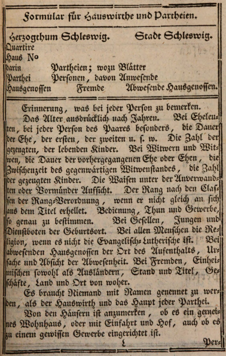
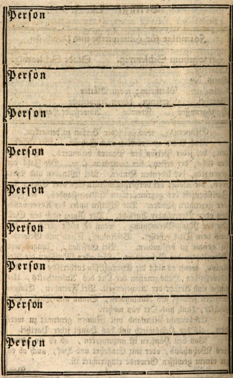
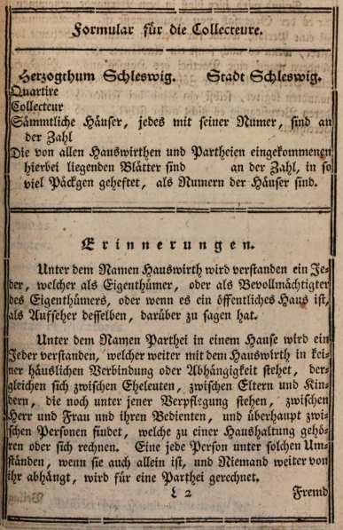
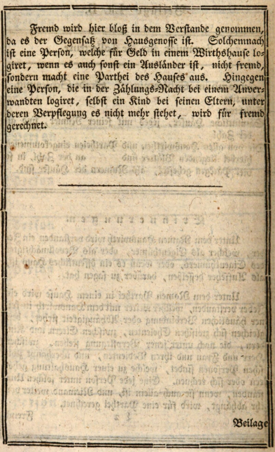

1.
Afhandlinger,
vedrørende den i året 1769
foretagne
Folketælling
i de
Kongelige Danske Stater i Europa;
af Herr Stiftsamtmand von Oeder
i Oldenburg.
(Uddrag af det af Forfatteren meddelte håndskrift til Udgiveren.)
Forberetning.
Disse afhandlinger er en følge og opfyldelse af en ordre, som mig blev meddelt kort efter, at tællingslisterne var indkommet, med henblik påat uddrage resultater af disse lister; at anstille betragtninger derover; at forelægge en plan til eventuelle fremtidige tællinger,
og hører afhandling A til den anden, afhandling B til den første, og afhandling C til den tredje del af denne ordre.
Jeg overlader disse afhandlinger til trykken i henhold til en tilladelse dertil, som jeg i det forgangne år modtog, og som jeg – i det hele taget kun en ven af offentlighed, så vidt den holder sig inden for passende grænser – anså for desto mere nødvendig, da jeg ikke betragtede en sådan frugt af en opgave som fuldt ud mit litterære ejendom.
Jeg overlader dem til trykken, sådan som de den gang flød af pennen, og håber, at de – med alle de mangler, som jeg meget vel er mig bevidst – dog ikke vil være det offentlige, indenfor og udenfor de Danske Stater, ubekvemme.
Brudstykker heraf findes i andet bind af Materialer til Statistik over de Danske Stater, som blev udgivet af velvillige, men mig ganske ukendte mænd, hos Kortens Forlag i årene 1784 og 1786, ganske uden mit medvirken, som den for mig forbløffende meddelelse i forordet, side V–VII, beviser.
Med Hr. Prof. Cromes uvidenhed, og utvivlsomt til hans egen tilfredshed, kan jeg her ikke undlade at rette de fejl, som findes i tabellen til side 42 i hans bog med titlen "Europas Produkter" (Udg. 1784), for så vidt angår Danmark og Norge.
Det hedder dér i spalten med overskriften: "forskellige angivelser":
ved Danmark: "808 ifølge Oeder, 952 ifølge en nyere og mere korrekt oplysning fra Kjøbenhavn",
ved Norge: "7000. 723, 141 ifølge en oplysning, som blev meddelt mig fra Kiel i året 1784",.
Berigtigelsen er følgende: Tallene 808 og 952 er begge mine egne angivelser. Tallet 808 skal forstås som omfattende Danmark og det derunder hørende hertugdømme Slesvig; tallet 952 indbefatter, foruden disse 808 kvadratmile, også hertugdømmet Holstein tilhørende den daværende kongelige privative andel, samt de daværende grevskaber Oldenburg og Delmenhorst. Tallet 723, 141, som angives som areal, giver ingen mening i den sammenhæng, men er antallet af indbyggere i Norge.
Oldenburg, den 18. februar 1789
G. C. von Oeder
A.
Forelagt efter befaling fra den Kongelige Rentekammer i året 1772.Efter lang og møjsommelig bearbejdelse af de lister, som indkom efter den den 15. august 1769 foretagne tælling af indbyggerne i de Kongelige Stater i Europa, ser jeg mig nu i stand til at fremlægge resultaterne af denne tælling, sammen med nogle betragtninger herover.
Ligeledes fremkommer jeg med en udvidet plan for sådanne tællinger, som med rette bør gentages fra tid til anden, fordi først sammenligningen af resultaterne fra flere tællinger bliver virkelig lærerig.
Hermed opfylder jeg altså den ordre, som mig efter allerhøjeste kongelige befaling blev meddelt fra den Kongelige Rentekammer den 18. april 1770. Jeg har påtaget mig mere, end hvad denne ordre egentligt indebar, nemlig også en sammenligning af de årlige forandringer i menneskeslægten med summen af de på én tid levende mennesker, hvorigennem også de regler kan fastsættes, ifølge hvilke man ud fra de årlige forandringer kan slutte sig til totalen, og jeg har i denne hensigt foranlediget uddrag af kirkebøgerne for de ti år fra 1760 til 1769; men da bearbejdelsen af disse endnu kræver noget tid, har jeg ikke villet opholde det, som egentlig blev mig pålagt, så længe, men resultaterne og slutningerne af uddragene af kirkebøgerne kan efter nogen tid følge som en tilføjelse til hovedsagen.
Jeg håber, at det store arbejde, som ligger skjult i de vedlagte tabeller – især i de mange foretagne beregninger for overalt at angive den nødvendige målestok til sammenligningerne – ikke vil forblive ubemærket, og jeg tør smigre mig med, at jeg på denne måde har udført mit hverv til allerhøjeste tilfredshed.
Betragtningerne over den den 15. august 1769 foretagne tælling deles, efter anvisningen i det dertil benyttede skema, i følgende afsnit:
I. Betragtninger over indbyggernes antal for sig og i almindelighed, uden henvisning til særlige omstændigheder.
II. Betragtninger, der opstår ved sammenligning af indbyggertallet med det rum, de bebor, eller landenes areal; samt betragtninger ved sammenligning af indbyggertallet med statens indtægter.
III. Betragtninger ved sammenligning af byernes befolkning med landbefolkningen.
IV. Betragtninger over forholdet mellem de to køn.
V. Betragtninger over forholdet mellem antallet af mennesker i hver af livets syv aldre, sådan som de er antaget i tællingsskemaet.
VI. Betragtninger over forholdet mellem gifte og ugifte.
VII. Betragtninger over klasserne efter deres næringsveje.
VIII. Betragtninger ved nærmere sammenligning af de nærende i borgerstanden, bondestanden og søvæsenet med de forbrugende tjenestefolk for kongen og staten i den gejstlige og civile stand, samt de uformuende.
Afslutningsvis følger:
IX. nogle bemærkninger om det benyttede skema og fremgangsmåden ved operationen.
Første Afsnit.
Betragtninger over indbyggernes antal for sig og i almindelighed, uden henvisning til særlige omstændigheder. Tab. 1.Indenlandske og udenlandske forfattere angiver sædvanligvis det formodede antal indbyggere i de Kongelige Danske Stater i Europa til 2½ million. Det går her, som det så ofte gør ved overfladiske skøn: man anser lande og byer for mere folkerige, og personer, der har ry for rigdom, for rigere, end det siden viser sig at være ved en virkelig tælling. Heraf fremgår nødvendigheden af egentlige folketællinger.
Da mange kongelige undersåtter altid opholder sig til søs, og da tællingen blev foretaget midt om sommeren, er der grund til at antage, at mange, som netop på det tidspunkt var fraværende, ikke blev medregnet. Denne antagelse bliver endnu mere sandsynlig gennem det betydelige overskud af kvinder over mænd, idet de fraværende for størstedelens vedkommende tilhører det mandlige køn.
Dog er vi heller ikke sikre på, at der ikke hist og her kan være mennesker, som er blevet talt to gange.
Hvis vi for de fraværende på tællingstidspunktet og for den i tællingslisterne ikke opførte stående væbnede styrke vil tillægge i alt 83.000 personer, for at bringe tallet op på 2.100.000, da regner vi uden tvivl rigeligt.
Et antal på 2.100.000 sjæle gør ganske vist ikke, blandt Europas stater, nogen til en af de store stater; men dette bør hverken vi undersåtter eller vor Allernådigste Konge anse som en mangel. Undersåtterne i de store stater, i hvis historie en 50-årig fred er noget uhørt, er ikke lykkeligere af den grund, at de er lemmer på et stort og uoverskueligt statslegeme; og for en menneskeven på tronen er kaldet til at gøre 2.100.000 mennesker så lykkelige som muligt stort og ophøjet nok.
Disse betragtninger skal tjene til, at vore statsmænd aldrig må miste det princip af syne, som Horats foreskriver digterne, der vil skrive et epos: "Versate diu, quid ferre recusent, quid valeant humeri" — betragt længe, hvad skuldrene ikke kan bære, og hvad de formår — således at de nøje tilpasser deres planer efter de behov, hvis opfyldelse naturen tillader, og efter de kræfter, som naturen har tilmålt os.
Et antal på 2.100.000 mennesker fortjener altid navnet en nation, og som en nation bør den med rette kunne måle sig med hele verden, hjemme hos sig selv. Denne sikkerhed, både udadtil og indadtil, som er det borgerlige livs første hovedformål, denne pålidelige tilstand, der ikke beror på verdens venskab eller verdens omskiftelser, men på statens egne kræfter, er grundlaget for al anden velfærd. Naturen, som har befæstet Norge med en klippemur, og som har forbundet den danske halvø med det store, faste tyske land ved en ikke særlig bred landtange mellem Travemünde og Hamborg, kommer os her til hjælp; men vi må være betænksomme på at forsvare denne vores svage side og mindes årene 1629, 1658 og 1762. Uden denne forbindelse med fastlandet ville Danmark være en ren sømagt, som Storbritannien; også med denne forbindelse må sømagten være det væsentlige — uden at vi derved forsømmer sikkerheden fra landsiden. Og da vi, med den nødvendige sømagt, ikke kan opretholde nogen landstyrke i stående tropper, så stor som den ville behøves, fremgår nødvendigheden af at danne en brugbar nationalmagt, som med lethed kan udgå fra en nations skød, der tæller 2 millioner mennesker.
Danmarks grænser er med hensyn til udstrækning fastsat af naturen, og hvis jeg ikke tager meget fejl, ville selv besiddelsen af de tabte provinser hinsides Sundet kun tilføre staten endnu en svag side; men inden for de nuværende grænser — hvor meget er der ikke endnu at gøre, hvor store fredelige erobringer er her ikke mulige? En frugtbar jord, som er ugunstigt fordelt blandt sine dyrkere; bånd, som stadig tynger den stand, der udgør tre fjerdedele af nationen; en hel stor forsømt provins som Island; den mest fordelagtige beliggenhed i havet og det dermed forbundne kald fra naturen; byernes næringsliv, som endnu befinder sig i sin barndom, og hvis udvidelse — fra forholdet 13:100 til forholdet 43:100 — altså en tredobling — er mulig! Hvilke udsigter åbner sig her ikke for en forøget folkemængde — en forøgelse, som er desto mere ønskværdig, eftersom — efter en fastslået læresætning i statsøkonomien — en stats kræfter ikke kun skal vurderes efter indbyggertallet, men også i forhold til det areal, de bebor, i omvendt forhold til udstrækningen af dette areal!
Sverige havde ved tællingen i 1757 i alt 2.317.599 sjæle fordelt over omtrent 5000 svenske eller 10.368 geografiske kvadratmile.
Frankrig havde ifølge Vauban i Dixme royale 19.094.000 mennesker, men ifølge den nyere forfatter til L’intérêt de la France mal entendus kun 17 millioner.
Spanien har ifølge Ustaris 7 millioner.
Asturien: 300.000.
I Portugal er der ifølge Büsching 1.742.230 sjæle, formodentlig uden præsteskabet.
England har ifølge King 5½ millioner.
Irland havde ifølge en folketælling i det forrige århundrede 1.034.102.
Provinsen Holland havde ifølge Leuwenhoek 1 million.Alle de 7 provinser i de forenede Nederlande har omtrent 2 millioner, ifølge Stryck 2½ millioner. Antallet af indbyggere i provinsen Holland er ellers omtrent blevet anslået til 1.200.000.
Neapel og Sicilien: ifølge Süßmilchs vurdering 4½ millioner.Sicilien: 1.600.000.
I byen Lucca og de dertil hørende 150 landsbyer regner man ifølge Büsching over 120.000 mennesker.
På Malta regner man omtrent 60.000 mennesker.
Tyskland har i alt ifølge Büschings skøn 24 millioner.
Preussen havde i året 1757: 700.000 mennesker.
Kurfyrstendømmet Neumark og Pommern: 1755, ifølge Süßmilch: 1.315.878.
Hertugdømmet Magdeburg: cirka 330.000 ifølge nogle; ifølge Süßmilch: 210.000.
Halberstadt: 81.000.
Øvrige preussiske lande, uden Schlesien: cirka 600.000; tilsammen, uden Schlesien, ikke fuldt 3 millioner.
Antallet af indbyggere i Mark Brandenburg blev i året 1756 anslået til cirka 800.000.
I Bøhmen blev der i 1766 talt 1.966.062 mennesker, og i 1767: 1.978.193.
Antallet af mennesker i Schlesien skal stige til over 1½ million.
I alle kurhannoveranske lande blev der i året 1756 talt 750.000 mennesker.
I hertugdømmet Württemberg talte man i året 1754: 477.115 mennesker.
I Elsass, ifølge Boulainvilliers: 257.000.
I fyrstendømmet Schwarzburg regner man med 100.000 mennesker.
Schweiz: 1.847.000; Graubünden: 250.000; Zürich: 175.000.
De fire italienske amter i de tolv kantoner: 120.000 mennesker.
Estland har ifølge forfatteren til skriftet om kornudførslen fra Estland 158.000 mennesker på 381 kvadratmil, heraf 18.000 indbyggere i byerne.
Andet Afsnit.
Betragtninger, som fremkaldes ved sammenligning af antallet af indbyggere med det rum, de bebor. Tabeller II–XIV; samt betragtninger ved sammenligning af indbyggertallet med statens indtægter.For at kunne danne en bedømmelse af landenes befolkning, må man have bestemte begreber om deres geografiske størrelse eller areal og kunne angive, hvor mange mennesker der falder på en given fladeenhed, f.eks. på en kvadratisk geografisk mil (15 geografiske mil pr. grad ved ækvator). Disse tal, som viser antallet af indbyggere pr. fælles fladeenhed, udtrykker således forholdet mellem befolkningstætheden i de forskellige lande, som skal sammenlignes, og først efter at dette forhold er blevet fastlagt, kan man spørge efter årsagerne til denne forskellighed i befolkning; og disse årsager må søges i jordbundens forskelligartede frugtbarhed, i udbyttet fra land og vand, i klimaet, beliggenheden, erhvervene, indbyggernes flid, landenes indre politiske forfatning, samt i verdens omskiftelser.
Allerede før jeg modtog nærværende opdrag fra den Kongelige Rentekammer, var jeg kommet på at undersøge landenes areal ved en lige så enkel som lidet alment kendt metode, og for omtrent to et halvt år siden modtog Hans Majestæt en opgørelse over arealet af Danmark, hertugdømmerne og grevskaberne Oldenburg og Delmenhorst, udført helt ned til hver enkelt herred.
For nylig har jeg udvidet disse undersøgelser til hele jordkloden, og agter snart at forelægge Hans Majestæt resultaterne af disse undersøgelser i allerunderdanighed.
Ser jeg bort fra de udmålinger af Tempelmann, som man i geografier og andre samlinger af mærkværdigheder ivrigt skriver af efter hinanden — og som dog blot er overfladiske og summariske — så er disse mine undersøgelser ganske nye, og de er lige så lidet kendte blandt udlændinge som herhjemme.
Efter at arealet således er fastlagt, kommer det nu an på at have pålidelige oplysninger om antallet af indbyggere — hvilket dog sjældent foreligger for andre lande. For at kunne sammenligne vore egne lande med andre, blot i nogen grad, vil jeg derfor først samle og anføre de få oplysninger, jeg har kunnet indhente, ledsaget af en udregning af antallet af mennesker pr. kvadratmil. Ligeledes vil jeg for nogle lande, hvis indbyggertal ikke er kendt, anføre deres areal.
| Region | Indbyggere | Areal | Mennesker pr. kvadratmil |
|---|---|---|---|
| Böhmen | 1,978,193 | 932 | 2122 |
| Brandenburgisch-Schlesien | 1,500,000 | 700 | 2143 |
| Frankreich | 19,000,000 | 9700 | 1958 |
| Frankreich | 17,000,000 | - | 1752 |
| Spanien | 7,500,000 | 9000 | 834 |
| Asturien | 300,000 | 259 | 1235 |
| Portugal | 1,742,230 | 1850 | 942 |
| Elsaß | 257,000 | 127 | 2024 |
| England | 5,500,000 | 2750 | 2000 |
| Schottland | 1,500,000 | 1750 | 857 |
| Irland | 1,034,102 | 1430 | 723 |
| Holland | 1,000,000 | 109 | 9174 |
| 7 vereinigte Provinzen | 2,333,500 | 580 | 4022 |
| Neapel und Sicilien | 4,500,000 | 2020 | 2228 |
| Sicilien | 1,600,000 | 550 | 2909 |
| Neapel | 2,900,000 | 1470 | 1973 |
| Deutschland | 24,000,000 | 10,120 | 2388 |
| Preußen | 700,000 | 720 | 972 |
| NeuPreußen | - | - | - |
| Churmark u. Pommern | 1,315,878 | 1230 | 1070 |
| Churmark | 800,000 | 753 | 1062 |
| Magdeburg | 210,000 | 105 | 2000 |
| Halberstadt | 81,000 | 30 | 2700 |
| Würtemberg | 477,115 | 140 | 3402 |
| Churhannöverische Lande | 750,000 | 730 | 1028 |
| Schweiz | 1,847,000 | 840 | 2198 |
| Zürich | 175,000 | 27 | 6480 |
| Graubündten | 250,000 | 205 | 1220 |
| Schweden | 2,307,599 | 10,368 | 222 |
| Gothenburg und Bahuslehn | - | - | 1151 |
| Malmöehuus und Christianstadt | - | - | 1034 |
| Halland | - | - | 914 |
| Bleking | - | - | 868 |
| Skaraborg | - | - | 896 |
| Upsala | - | - | 685 |
| Oster Oerland | - | - | 650 |
| Elfsborg | - | - | 624 |
| Stockholm | - | - | 525 |
| Södermanland | - | - | 484 |
| Westmanland | - | - | 473 |
| Croneburg | - | - | 468 |
| Jönköping | - | - | 381 |
| Nerika und Wermaland | - | - | 338 |
| Calmar | - | - | 338 |
| Gotland | - | - | 324 |
| Finland | - | - | 143 |
| Kopparberg | - | - | - |
| Westmanland | - | - | 48 |
| Westbotten | - | - | 48 |
| Lionnois | - | - | 2408 |
| Auvergne | - | - | 1777 |
| Normandie | - | - | 3494 |
| Churfürstliche Lande | - | 729 | - |
| Estland | 158,000 | 381 | 414 |
| I byerne. | 18,000 | - | - |
Når man nu, efter disse foretagne sammenligninger — både af vor egen indenlandske befolkning mellem provinserne indbyrdes, og af den indenlandske befolkning med fremmede europæiske landes — vil kaste et opmærksomt blik på de betragtninger, som derved opstår, så trænger sådanne betragtninger sig i så stor mængde på, at jeg, som jo ikke er kaldet til at skrive en hel bog, må indskrænke mig til nogle få enkelte.
Jeg har altid, så vidt jeg har kunnet bedømme det på mine rejser gennem blot det ydre skue, været af den opfattelse, at Danmark, for så vidt det består af øer, er bedre beboet end Slesvig; Slesvig bedre end Holsten — og det viser sig nu at være sandt. En af årsagerne er efter min yderligere mening denne, at hvad angår den del af disse lande, som består af adelige godser, så er i Danmark 7/8 eller 5/6 af arealet på et gods besat med bondegårde, mens det i hertugdømmerne kun er halvdelen, og næppe det. Opdelingen af domænerne i hertugdømmerne bidrager allerede noget til en yderligere befolkning af disse.
Man bedes ikke undlade at lægge mærke til den fremtrædende befolkning i grevskaberne Oldenburg og Delmenhorst samt øerne Femern, Als og Ærø, ej heller til Overlegenheden for Oldenburgs marskland frem for det holstenske og slesvigske, sandsynligvis fordi der i førstnævnte holdes mere jord under plov, mens der i sidstnævnte overlades mere til græsning. Og på Sjælland, Amager og Sokkelund Herred vil man kunne spore virkningen af nærheden til en stor by.
Hvoraf mon den særdeles tætte befolkning i Ring Herred i Aarhus Stift (3246) stammer?
I Norge. Nordlandene, en så stor provins (2082 kvadratmil) med sin vidtstrakte, fiskerige kyst, og hvor landet, i hvert fald hvad angår fogderierne Helgeland og Salten, ikke er ringere end andre dale ved kysten i Trondhjems og Bergens stift, har kun 26 mennesker pr. kvadratmil. Og dog må fordomme og monopoler for evigt veje tungere end den sunde fornuft, som allerede ved første blik på landkortet siger, at der burde være en by i Nordlandene!
Og Island (som endnu burde være for os, hvad Terre-Neuve engang var for hele Europa, før banken dér blev opdaget, og som i året 1615 blev besøgt af 120 engelske skibe på én sommer) — Island (2904 kvadratmil) har kun 16 mennesker pr. kvadratmil; og Finmarken (1244 kvadratmil) endog kun 5 mennesker, skønt det uden tvivl i gamle tider har været tættere beboet og har haft 12 nu forsvundne kirkesogne! Frugter af kompagnihandelen!
Jeg kan ikke afholde mig fra endnu en bemærkning om Island; for en så stor provins burde med rette en dag blive, hvad den kan være: mere værd for staten. Island har 46.201 indbyggere, Nordlandene 53.500, altså ganske vist 16 % flere; men sammenlign engang handelen i Nordlandene, sådan som den føres, trods al den undertrykkelse denne provins er udsat for, med den islandske! Hvad er 23 eller 24 skibsladninger — ganske vist anselige skibe, som kompagniets islandske skibe er — dog imod 300 nordlandske jagters ladninger, fartøjer, der også kan bære meget? Og på denne ubetydelige mængde af voluminøs eksport, som ikke overstiger 24 skibsladninger, hviler hele det islandske folks velfærd! Stakkels folk!
Man sammenligne befolkningen i de ved kysten beliggende fogderier i stifterne Christianssand, Bergen og Drontheim med de længere inde i landet beliggende fogderier i selvsamme stifter, samt med de tilsvarende fogderier i Aggershus Stift (de kornrige fogderier i dette stift må dog i denne betragtning sættes til side), for at erkende fiskeriernes fordele og betydning.
De udgør i dette rige langt den vigtigste gren af erhvervslivet, og handelen med fiskeriprodukter er især også af den grund den mest solide, fordi disse produkter ikke kan magasineres, men nødvendigheden af at skaffe sig dem gentager sig årligt. Derfor har fremmede nationer ikke samme mulighed for at fastsætte priserne, som de har det med hensyn til andre norske produkter — metallerne og især træet.
Sammenligning med fremmede stater.
Når vi kun vil sammenligne os med de europæiske stater, der almindeligvis regnes for at være mådeligt eller endog svagt befolkede, så er befolkningstallet 1305, som i gennemsnit findes i kongeriget Danmark og de tyske provinser tilsammen, vel nok nogenlunde; men når vi retter blikket mod andre stater, hvor et mere udbredt erhvervsliv hersker, så er vi utvivlsomt langt bagud. Disse mere blomstrende nationer må vi stræbe efter, ligesom enhver, der søger forbedring, ikke må måle sig med dem, der står bag ham, men med dem, der er foran. Det må vi, og det kan vi også.Vi må gøre det; for (hvad nytter smiger?) vi udgør, som sagt, med vore 2.100.000 hoveder kun en ganske beskeden stat; og på den tyske side har naturen, som ligeledes nævnt, sat os en grænse — vi må altså søge statens forøgelse i det indre. Og vi kan gøre det. For selv om det er sandt, at nordlige lande aldrig helt kan opnå samme befolkningstæthed som sydlige, selv under ellers lige forhold, af den simple grund, at indbyggerne i nordlige lande har behov for mere brændsel, og at enhver form for brændsel (undtagen stenkul, som tages op fra undergrunden) — selv tørv, der kræver mindre plads end træ, men dog en betydelig del af arealet — kræver dyrkning, så må vi alligevel ikke forsømme de fordele, som den gode natur har skænket os: jorden, som i kongeriget Danmark og i de tyske provinser er fuldt brugbar og mange steder i en ikke ringe grad frugtbar; og frem for alt den fordelagtige beliggenhed ved havet, som bringer fødevarer til eget forbrug, letter afsætningen af vore produkter, og selv uden egne varer eller industri tilbyder mulighed for fortjeneste ved ombytning af fremmede varer og ved fragtfart.
Vi må altså tage Storbritannien og Holland som forbillede, uden at lade os afskrække af det store forspring, de har: for selv om vi ikke når dem i totum, så kan vi dog nå dem in tantum. Men vi må også vælge den vej til velstand, som disse nationer har fulgt, og følge vort kald i rigtig orden. Vores kald, vores hovednæringsvej må være: først agerbrug og kvægavl, fiskeri og søfart; fabrikker kan følge, hvis de kan — det vil sige, i det omfang der findes hænder dertil, hvilket der naturligt nok i et land med fiskeri og søfart altid er færre af end i indlandsstater.
Blandt midlerne til at fremme undersåtternes næringsliv er dette det vigtigste: ved ringe direkte indgriben fra regeringens side, desto større frihed. Især ønskede jeg, til fremme af vor naturgivne bestemmelse — entrepothandelen i Østersøen og mod Hvidehavet, ja al handel i det hele taget — en nedsættelse af tolden, således at told ikke længere var en hovedindtægt for staten, men i stedet blot blev betragtet som et middel og regulerende værktøj for handelen. Da kunne, i stedet for det projekterede fristedsområde i København for entrepothandel, hele København blive entrepothandelens hovedsæde.
Jeg anser det for helt muligt at opveje det bortfaldne provenu fra toldindtægter gennem en øget konsumtion blandt alle undersåtter, gennem en erhvervsafgift for dem, der handler, og gennem en afgift på husene og grundene i en frihavn. Og den for handelen højst vigtige forskel mellem disse typer af afgifter består deri, at tolden direkte påvirker varerne og har indflydelse på deres pris, og dermed vanskeliggør deres omsætning — i modsætning til afgifter på konsum, erhverv og ejendom, hvor hver enkelt må indrette sig som han bedst kan og også gerne gør det, når han til gengæld har adgang til alle varer ubesværet og uden indskrænkning, til både nydelse og spekulation, og dermed desto lettere kan afsætte dem ved videre handel.
Betragtninger ved sammenligning af indbyggertallet med statens indtægter.
Til dette formål har jeg udarbejdet følgende tabel, som jeg kun behøver at forklare med få ord.
| Districte | Befolkning | Indtægter |
|---|---|---|
| a. Total | 10,000 | 10,000 |
| b. Dänemark (100:11.1) | 3,885 | 4,589 |
| c. Norwegen (100:61.8) | 3,585 | 2,216 |
| d. Hertugdømmer (100:149.8) | 1,876 | 2,811 |
| e. Grevskaber (100:122.7) | 312 | 383 |
| f. Island (100:11.36) | 229 | 26 |
| g. Toldindtægter i Dänemark | 714 | 784 |
| h. Toldindtægter i Norge | 255 | 1,049 |
| i. Bjergværkstold og tiender | - | 149 |
| k. Told i hertugdømmerne | 348 | 277 |
| l. Forbrug, konsumtionsafgift, folke- og familieskat i Dänemark | - | 1,434 |
| m. Forbrug, konsumtionsafgift, folke- og familieskat i Norge | - | 158 |
| n. Toldindtægter fra København | 350 | 534 |
| o. Forbrug og konsumtion fra København | - | 806 |
| p. Landgilde i Dänemark | 3,180 | 1,881 |
| q. Landgilde i Norge | 3,264 | 704 |
| r. Landgilde i hertugdømmerne | 1,528 | 1,137 |
| s. Landgilde i grevskaberne | 369 | 383 |
| t. Kronens godser i Dänemark | - | 267 |
| u. Kronens godser i Norge | - | 134 |
| v. Kronens godser i hertugdømmerne | - | 140 |
Det totale antal af befolkning og indtægt i samtlige stater er antaget som 10.000, det vil sige, ud af hver 10.000 sjæle — alle indbyggere tilsammen — udgør 3885 indbyggere fra Danmark, og ud af hver 10.000 rigsdaler af statens indtægter kommer 4589 rigsdaler fra Danmark.
Ved fastsættelsen af det samlede beløb for indtægterne har jeg udelukkende taget hensyn til de lokale indtægter og har udeladt alle de statslige indtægter af almen karakter, som ikke kan henføres til en bestemt del eller provins, såsom: postindtægter, stempelpapir, sportler, Øresundstolden, Elsflether-tolden — idet, hvad angår de to sidstnævnte poster, det meste opkræves af fremmede rigers undersåtter, og hvad angår de øvrige poster, er det vanskeligt at fastsætte, hvor meget hver enkelt del af de kongelige stater i særdeleshed bidrager med. Den ved posterne p. q. r. s. anførte befolkning er at forstå som befolkningen på landet.
Denne tabel er alt for frugtbar i betragtninger over de indre kræfter i statens forskellige dele — betragtninger, som må danne grundlaget for en grundig teori om skatteanlæggelse — til at jeg her kunne påtage mig at udtømme den, og jeg må derfor begrænse mig til nogle få, som vedrører Norge.
Indbyggerne i Norge forholder sig til indbyggerne i Danmark som 3585 til 3885, men indtægterne fra Norge forholder sig til indtægterne fra Danmark som 2216 til 4589. Hvis indtægterne skulle stå i forhold til befolkningen, burde Norge, når Danmark giver 4589 rigsdaler, give 4235 rigsdaler, eller 92 2/100 rigsdaler, når Danmark giver 100 rigsdaler. Men Norge giver i virkeligheden kun 48 29/100 rigsdaler.
Nu kan vi med god ret antage, og vi må også i sandhed beskedent tro, at vore forfædre ved fastsættelsen af skatteanlæggene har handlet så overvejet som vi selv ville gøre det, efter deres bedste indsigt og kundskab samt under datidens omstændigheder. Omstændighederne forandrer sig i hele den sublunare verden altid noget; der er altid noget, der kan forbedres og rettes i vor indsigt, og kundskaberne udvider sig: derfor er forbedringer af vores skatteanlæg ikke blot mulige, men vi må virkelig stræbe efter dem og bestræbe os på at opspore alle mangler og punkter, hvor en sand forbedring er mulig – hvor en af statens indtægtskilder kan åbnes, udvides eller renses – hvor en ulighed i de byrder, som pålægges undersåtterne, kan undgås eller ophæves. Men vi må vogte os vel for pludselige og voldsomme afvigelser fra det, som er indført og er blevet en vane, og vi må nøje overveje, at – ligesom på den ene side skattebyrderne i tidens løb umærkeligt retter sig efter erhvervsmidlerne, selv for regeringen umærkeligt – således retter på den anden side hele det borgerlige liv, hele undersåtternes erhverv sig efter skattebyrderne.
Indføres der da pludselig en afgift, som ikke er behørigt tilpasset erhvervsmidlerne, vil der uundgåeligt opstå ubehagelige følger. Og at sådanne er opstået med hovedskatten, særligt i Norge, må vi ikke undre os over. Og jeg beder, at man – fra mig, hvis hensigt, Gud ved det, ikke er at fornærme – vil lade sig forklare, hvorledes disse ubehagelige følger ikke vel har kunnet udeblive.
Hovedskatten er en afgift, som retter sig efter antallet af indbyggere, men erhvervsmidlerne retter sig ikke efter antallet af mennesker. Denne form for afgift kan være passende i en stat som Rusland endnu er, hvor de øvrige afgifter er få, hvor særligt de ubevægelige erhvervskilder, navnlig jord og grund, endnu ikke har nogen fast værdi, som lovgiveren ved skatteudskrivning kan rette sig efter. Men for de danske stater egner denne afgift sig ikke – netop fordi de er bedre ordnet og styret end Rusland endnu generelt taget er. Og i det omfang Rusland forbedrer sig indadtil, hvilket uundgåeligt vil ske, vil også hovedskatten dér mere og mere blive uanvendelig – den kan dog ved lavere skatter i øvrigt trykke mindre.
Men hos os tynger den – og, caeteris paribus, norrmanden mere end danskeren – fordi norrmanden er vant til ved de almindelige skatter (forhåbentlig i forhold til sine mindre erhvervsmidler) kun at betale halvt så meget som danskeren, men ved hovedskatten bliver sat på lige fod med danskeren, hvem naturen har givet bedre midler til erhverv.
Forskellen bliver endnu så meget tydeligere, når vi tager landmanden i Norge i betragtning, som i dette rige udgør 9/10 af nationen. Deres antal forholder sig til befolkningen på landet i Danmark som 3264 : 3180, men landtaksen i Norge til landtaksen i Danmark som 704 : 1881. Ifølge folketallet burde Norge, når Danmark betaler 100 Rdl. i afgifter fra landet, give 102 60/100 Rdl., men giver i virkeligheden kun 36 28/100 Rdl. Når nu den norske landmand, hvis underhold alene afhænger af udbyttet fra den gård, han bebor, og som sædvanlig kun betaler 36 28/100 Rdl., skal betale hovedskat på lige fod med den danske landmand, som i gennemsnit yder 100 Rdl., så må det jo nødvendigvis trykke ham uforholdsmæssigt mere i forhold til hans kræfter.
Lad os hertil føje andre nærliggende betragtninger: at regeringen ikke gør nogen nævneværdig udgift i Norge, således at en stor del af de indtægter, den henter fra Norge, forlader riget og forsvinder ud af dets indre omsætning, og at disse midler kun kan vende tilbage i nordmændenes hænder – og derfra i kongens hænder – gennem en frugtbar handel med andre nationer. Men ved en ulykke (som Gud i sin nåde snart vil vende bort) har afsætningen af de norske eksportvarer i de senere år ikke kunnet opveje importvarernes tilstrømning. Derfor bliver det forståeligt, hvorledes klagerne over ekstraskatterne og pengemanglen i Norge har kunnet blive så omfattende.
Endnu mere: således som landmændene er talrige i Norge, er landtaksen ubetydelig, mens toldindtægterne i Norge, sammenlignet med andre kongelige lande, er særligt betydelige og udgør langt den største del af kongens indtægter fra dette rige. Naturligt nok er de bedste midler til erhverv i hænderne på dem, der betaler denne told – altså dem, handelen går gennem – og det vil sige byernes indbyggere, og her igen ikke den jævne borger, men købmændene og ejerne af skovene, bjergværkerne og alle de vigtigste eksportkilder i dette rige. Derfor må en finansmand i Norge rette sin opmærksomhed mindre mod landmanden og mere mod byens indbyggere, og hvis han vil tænke grundigt over sagen og følge det spor, jeg her angiver, vil han finde anledning til at udrette noget gavnligt.
Lad os frem for alt vogte os for, at vi – blot fordi Norge forholdsvis ikke er særlig udbytterigt og ikke bringer store summer til kongens kasse – lader os forlede til at nære ringeagt for dette rige: det skaffer os mennesker til hæren og flåden!
Mit særlige lod fører mig bort fra dette riges anliggender, men aldrig vil min smag for dem forsvinde, og heller ikke min deltagelse i de bedste ønsker – lige så lidt som min højagtelse for denne agtværdige nation!
Tredje afsnit.
Betragtninger ved sammenligning af befolkningen i byerne og på landet. Tabel XV. XVI.Allerede i første afsnit har jeg anført, at Davenant angiver forholdet mellem byernes indbyggere i England og landets befolkning som 3:4, eller forholdet mellem byerne og det samlede antal indbyggere som 4285:10.000. I De Forenede Nederlande, og særligt i provinsen Holland, er forholdet utvivlsomt endnu højere – ja, det er sandsynligt, at i nævnte provins er antallet af by- og købstadsbeboere, eller med andre ord, dem der driver bymæssigt erhverv, større end antallet af landbefolkning, altså dem der beskæftiger sig med landbrug. Jeg vil dog helt se bort fra eksemplet Holland, da denne stat er en ganske særlig stat, som ikke ernærer sine indbyggere med egne produkter, men med hele verdens produkter – den er næsten udelukkende by, og i forhold til hele Europa, hvad en folkerig by er i et land. Men England, som ernærer sine indbyggere med sine egne produkter, kan med rette og grund sættes som forbillede for os.
Hvor langt er vi da ikke fra forholdet 428:1000, når vi i den lille provins Sjælland – hvis vi da alene regner København som en sjællandsk by, hvilket dog er urigtigt, da den er hovedstad, ikke blot for denne provins, men for begge riger og hele staten – finder forholdet 333:1000? Og hvis vi udelader København og kun betragter de øvrige byer i Sjællands stift i forhold til dette stifts landdistrikter, hvor ynkeligt er da ikke forholdet 113:1000? Så sandt og indlysende er det, at de små sjællandske byers erhverv bliver opslugt af København; de har dog uden tvivl alle tidligere haft mere erhvervsliv, hvilket kan udledes af de mange forfaldne store gårde, man ser i alle disse byer.
Så snart vi tager København ud af ligningen, hvor meget falder da ikke alle provinser i Kongeriget Danmark — selv Fyn, hvor forholdet dog stadig er 126:1000 — i forhold til Slesvig, hvor der dog så godt som er fabrikker, men vel at mærke også større handelsfrihed end i Danmark.
Holstein skylder sin betydelige andel på 254:1000 byen Altona, for hvis vi fra de 34.112, som udgør det samlede bytall, trækker Altona med sine 18.050 fra, giver resten 16.062; og i forhold til det samlede antal indbyggere på 134.665 bliver det altså kun 119:1000.
Men Norge — som kun har 89 byboere pr. tusind indbyggere! Norge, som dog uden tvivl fører mere handel end nogen anden kongelig provins, hvis man ellers vil kalde den store omsætning af eksport- og importvarer for handel. Altid, så længe jeg har kendt Norge, og det er dog nu i en hel del år, hvor jeg har haft mange anledninger og lejligheder til at undersøge dets tilstand — og i mange indlæg, jeg har afgivet til et par af de fornemste mænd i Frederik den Femtes ministerium, særligt i forbindelse med projektet om at anlægge kolonister i Norge — har jeg uophørligt sagt: Vil man støtte Norge, skal man ikke begynde med landbruget, men med det borgerlige erhverv. Landbruget er i Norge — hvor ingen dårlig bondeordning, som i Danmark, står i vejen for det — omtrent så langt fremme, som det, under givne vilkår og uden nævneværdig opmuntring fra byernes erhvervsliv, kan komme af sig selv. Det kan uden tvivl drives videre; utvivlsomt kan mange endnu udyrkede områder opdyrkes; uden tvivl kan bondeklassen vokse i antal — og alt dette vil ske, når byernes erhverv udvides, men ikke før.
Allerede i 1755 sagde jeg det: der vil ikke komme noget ud af rydningsvæsenet, som netop dengang blev ivrigt iværksat — og erfaringen har vist, hvor ret jeg havde. Ligeledes tænkte jeg om kolonistprojekterne i Jylland og Holsten, idet jeg altid har været, og stadig er, overbevist om, at den befolkningsmetode, som blev anvendt i Amerika, i Preussen og i det preussiske Litauen under den forrige konge, samt i nogle provinser af det russiske rige under Katharina II, ikke lader sig overføre på de danske stater — eller overhovedet på stater, som allerede er mærkbart befolkede, hvor den gode jord er optaget, og kun den dårlige er tilbage.
De fordele, som opstår af byernes erhvervsvirksomhed for landbruget, er: en sikker og nærliggende afsætning af alle og enhver af landbrugets produkter, hvilken afsætning opmuntrer landmanden til at yde mere og mere; ligeledes en nærliggende mulighed for indkøb af alle de fornødenheder, som landmanden på sin side har brug for; den tidsbesparelse, der følger af en sådan nærliggende byttehandel, og koncentrationen af flid og tidsanvendelse på landmandens egentlige gerning — alle sammen forhold, hvis modsætning findes i den norske bondes husholdning, som kun har søbyer, og end ikke én af betydning nord for Trondhjem; der findes heller ingen byer inde i landet, ikke engang på den lange strækning mellem Trondhjem og Christiania, hvor der dog endnu på Christian den Andens tid lå den folkerige by Hammer på Hedemarken.
Men hvordan skal byernes erhvervsliv udvides? Ikke på anden måde end ved større frihed — denne bedre moder til flid, opfindsomhed, håndværk, smag, kappestrid, sparsommelighed, rimelige priser, alment og særligt velstand — end den rene nødvendighed nogensinde har været. Hvordan skulle ellers håndværk og handel kunne blomstre nævneværdigt i en stat, hvor toldsatser og afgifter på varer, påbud og forbud, restriktioner og formaliteter er så mange og mangfoldige, at et helt lovværk kunne udledes blot af toldreglementet; hvor smuglerhandelen netop derfor er blevet den mest indbringende handelsvej; hvor monopoler fra kompagnihandel, eksklusive privilegier, tvungne fabriksanlæg og indbildte hensyn bestandigt begunstiger en lille del af befolkningen på bekostning af den store, én provins på bekostning af én eller flere andre; hvor spekulationsmulighederne for en driftig handelsmand er både små og usikre, fordi han hver dag må frygte, at en eller anden forordning kaster hans planer over ende; hvor visse betydelige provinser, på grund af den særlige forfatningsmæssige stilling, i handelsanliggender næsten står staten fremmed; hvor titelsyge har fordervet handelsånden, og hvor der dagligt går nogle af de bedste huse tabt for handelen — dem, som i kraft af deres allerede vundne velstand bedst kunne indlade sig på spekulation og handelsforetagender — og hvor disse erstattes af begyndere, som savner kræfter, og så videre.
Der er i de danske stater 133 byboere pr. tusind mennesker, altså 867 landboere. Lader vi det antage forholdet 428:1000, som ifølge Davenant gælder for England, hvor der altså kun er 572 landboere ud af hver tusind, da må det samlede antal, hvis 867/1000 skal blive til 572/1000, vokse i forholdet 572:867, det vil sige som 100:151,5; og således må 2.100.000 mennesker blive til 3.057.200. Selv hvis vi kun nåede et forhold på 200:1000, ville totalen dog vokse som 800:867 = 100:108 til 2.186.030, altså en stigning på 169.000 mennesker.
Fjerde afsnit
Betragtninger over forholdet mellem begge køn. Tabel XVII—XXI.Her er det meget at beklage, at denne tælling blev foretaget på en så ubelejlig årstid som midt på sommeren (15. august), og efter et ikke vel indrettet skema.
I stater som de danske befinder sig nemlig på denne årstid en stor mængde mandspersoner uden for landet, især søfarende, men også mange, som udøver deres næring udenlands til lands, navnlig i grevskabet Oldenburg mange, som i høsttiden rejser til De Forenede Nederlande. Operationen burde derfor have været foretaget om vinteren, eller der burde i skemaet have været en særlig rubrik for fraværende, og vel at mærke opdelt i to: for fraværende uden for riget, og for fraværende i andre kongelige stater. Nu ved jeg hverken, hvor mange mandspersoner der måtte have været til søs eller i øvrigt uden for landet på det tidspunkt, eller om de mandspersoner, som ikke befandt sig uden for riget, men kun var fraværende fra deres hjemstavn inden for de øvrige kongelige stater — f.eks. de mange jyder og indbyggere fra geeststrækningerne i hertugdømmerne, som i høsttiden drager til marskegnene — er blevet talt med i deres hjemstavn, på opholdsstedet, på begge steder eller på ingen.
Jeg kender heller ikke antallet af mandspersoner, som på grund af at være under våben, er blevet udeladt fra tællingen — hvilket er en anden stor mangel ved skemaet.
På denne måde er resultaterne af tællingerne, og de slutninger, som deraf kan drages med hensyn til spørgsmålet om forholdet mellem kønnene, vildledende, og jeg vil derfor hellere tilskrive overskuddet af 89 kvindspersoner for hver tusinde mandspersoner den unøjagtigt foretagne tælling samt mandspersonernes midlertidige udvandringer, end en virkelig, absolut og så stor mangel på mandspersoner — og blandt årsagerne til denne mangel antage udvandringer for bestandigt.
Sandt nok findes der nok et vist overskud af kvindspersoner i alle lande, selv om der fødes flere drenge end piger, og det skyldes formodentlig mændenes erhvervsmæssige arbejde, som slider mere på kroppen og oftere udsætter dem for livsfare; og netop på grund af denne bestemmelse lader Verdens regerer måske flere drenge end piger blive født. Men et overskud på næsten 9 procent er dog bestemt for meget.
Det er vel desværre også alt for sandt, at mange mandspersoner fra Norges kyst, fra Jylland, fra hertugdømmerne, fra øerne og fra vestkysten udvandrer og for bestandigt går tabt for staten; og hovedskatten kunne vel være en medvirkende årsag dertil. Men jeg vil dog ikke tro, at denne udvandring for bestandigt går så vidt, som overskuddet på 9 procent efter første øjekast kunne lade formode.
I mellemtiden må dog blot dette tilsyneladende forhold vække regeringens årvågne opmærksomhed. For manglen på så mange mandspersoner er en stor ulykke for staten — dels fordi de udvandrede eller på anden måde ved hændelser bortfaldne mænd hører til nationens kerne og til den del af den, som bærer erhvervet, dels fordi det kvindelige køn dermed mister så mange ægtemænd, og dette tab for de tilbageblevne kvindspersoner ikke andet end uundgåeligt kan blive en anledning til uordentlig livsførelse.
Heraf fremgår én blandt mange dårlige følger af det stående soldatervæsen: den ugifte stand hos så mange dertil egnede mænd.
Især er forholdet mellem personer af kvindeligt og mandligt køn på Island, 1186:1000, iøjnefaldende, og jeg mindes i den forbindelse også den bemærkning, som Hr. Dr. Hensler tidligere har gjort i en trykt afhandling, nemlig at der på Island i særlig grad bliver døbt mange uægte børn. Årsagen til dette overskud kan næppe være udvandringer af mandspersoner; for, så vidt jeg ved, forlader kun få islændinge øen — med undtagelse af studenter, hvis ringe antal ikke spiller nogen rolle i sagen. Jeg ser derfor ingen anden forklaring end den, at sandsynligvis mange islændinge, som følge af deres dårligt udrustede søfart, falder som ofre for havets bølger under fiskeri.
Også i Norge er forholdet 1107:1000 betydeligt, men skyldes forhåbentlig kun midlertidige udvandringer.
Ved sammenligning af forholdene 1082:1000 i hertugdømmet Slesvig og 1025:1000 i Holsten, viser sig årsagen til det større overskud i Slesvig at skulle findes i søfarten; idet det i Holsten kun er Altona, der har egentlig søfart — Itzehoe fortjener i den henseende ikke at nævnes — hvorimod Slesvig, foruden sine flere havne ved Vest- og Østersøen, også har øerne i Vesterhavet, som er fulde af søfolk. Det usædvanligt ringe overskud i Holsten, kun 25 pr. tusinde, skyldes formentlig det forhold, at hertugdømmet afgiver mange tjenestepiger til Hamburg og Lübeck.
At der i byerne forholdsvis findes flere kvinder end på landet, er forståeligt, fordi selv enhver borgerkone af ringe stand holder en tjenestepige, og de mere velstående ofte flere; også vælger enker gerne at bosætte sig i de mindre byer. Jeg tror dog ikke, at det alt for store overskud i København — 349 over tusinde mandspersoner — alene skyldes dette, men snarere, at de værnepligtige ikke er medregnet i det samlede antal indbyggere af begge køn. Men hvorfra det næsten lige så store overskud i Trondhjem, 341, stammer, begriber jeg ikke. Sandt nok viser Tabel XX endnu flere lige så store eller endda større forhold, men summen af indbyggere i de små byer er for ubetydelig til, at forholdet mellem kønnene kan have nogen afgørende vægt; nogle få enker mere eller mindre blandt et så lille antal indbyggere giver straks et udslag.
I Kongsberg, hvor befolkningstallet er forholdsvis betydeligt, er antallet af kvinder under gennemsnittet, kun 905 pr. tusinde mænd, fordi bjergarbejderne ikke i samme grad kan gifte sig, og fordi der i de senere år var antaget mange arbejdere fra omegnene til bjergværksarbejdet. Da dette mærkbart fortrænger den egentlige bjergmand og berøver ham hans fortjeneste, foranledigede den norske kammer i min tid, at disse fremmede blev sendt tilbage til deres hjemstavn — en foranstaltning, som urimeligt blev anset af ukyndige som et tegn på værkets forfald. Der blev også draget omsorg for at skaffe kvinderne og døtrene af bjergmændene arbejde, hvilket de i øvrigt med den ringe husholdning, der hører til en bjergmandsstand, vanskeligt selv kunne finde, og som derfor var til stor byrde for husfædrene.
Af Tabel XXI fremgår det i det hele taget, at også på landet, i distrikter med mange søfolk, forbliver overskuddet af det kvindelige køn. I de herreder, der hører under Ribe stift, nær Tønder, kan man se virkningen af kniplingsindustrien. Men hvor det overvældende overskud i Nørre Herred på Langeland — 1532 — kommer fra, forstår jeg ikke.
Femte afsnit
Betragtninger over forholdet mellem menneskets antal i hver af livets 7 trin, som er antaget i tællingsskemaet. Tab. XXI–XXXV.Hvis vi bedre var forsikrede om rigtigheden og nøjagtigheden af tællingslisterne med hensyn til de menneskelige aldersklasser, og hvis disse trin i det hele taget ikke var så vidtspændende, men mere præcist afgrænsede — især det 7. trin, som omfatter alderen fra 49 år til livets yderste grænse, hvilket er alt for summarisk og overfladisk opstillet — så kunne en sådan tælling tjene til nøjagtigt at korrigere de love, efter hvilke Livets Herre lader forandringerne i menneskeslægten ske, og lader det ene slægtled opstå og det andet forsvinde. Men da det skorter på tilstrækkelig pålidelighed, nytter det heller ikke meget at fordybe sig i dybere betragtninger herom; dog vil jeg søge at udlede så meget som muligt af de foreliggende oplysninger.
Ud af hver tusind personer hører 202 til den første aldersgruppe, 160 til den anden; altså er der blandt hver tusind mennesker 362, der er seksten år gamle eller yngre, og de øvrige 638 mennesker er over 16 år. Hvis vi halverer antallet i den anden gruppe og regner med 80 personer fra 9 til 12 år inklusiv, og yderligere 80 for dem fra 13 til 16 år inklusiv — hvilket dog næppe er helt præcist, og det er snarere sandsynligt, at flere hører til gruppen 9 til 12 år end til 13 til 16 år — så finder vi forholdet mellem børn, der er 12 år og yngre, og de øvrige mennesker som 282 : 718.
Således har vi blandt 723.141 sjæle i Norge, hvor skattepligt begynder efter det 16. år, 461.363 skattepligtige hoveder; og blandt 1.293.886 sjæle i de øvrige stater, hvor skattepligt begynder efter det 12. år, har vi 929.010 skattepligtige hoveder — det giver tilsammen 1.390.373 skattepligtige personer.
Det er dog langt fra, at den nuværende ekstraskat, hovedskat, procentskat og rangskat, alt taget tilsammen, skulle indbringe så meget. Sådan som denne skat opkræves i øjeblikket, er det en fuldstændig vilkårlig skat, som fuldkommen mangler det princip om proportionalitet, der dog burde ligge til grund for enhver skatteordning.
Af hvert Tusinde Hoveder henregnes 202 til den første Alderstrin, 160 til det andet; følgelig ere under hvert Tusinde Mennesker 362 endnu ikke fyldte det 16de Aar, og de øvrige 638 ere over dette Alderstal. Om vi derhos ville antage, at Tallet af Personer i det andet Alderstrin lod sig dele i to lige Dele, nemlig 80 for dem fra det 9de til det 12te Aar inklusive, og atter 80 for dem fra det 13de til det 16de inklusive — hvilket dog vel næppe i strengeste Forstand kunde være sandt, men snarere, at en større Deel hører til det yngre Alderstrin — saa finder vi Forholdet mellem Børn, som endnu ikke have overskredet det 12te Aar, og de øvrige Mennesker, som 282 : 718.
Herefter have vi blandt de 723,141 Sjæle i Norge, hvor Skattepligten begynder efter det 16de Aar, 461,363 til Hovedskatten pligtige Hoveder; og blandt de 1,293,886 Sjæle i de øvrige Kongelige Stater, hvor Skattepligten sætter ind efter det 12te Aar, 929,010 Hoveder. Disse udgjøre tilsammen 1,390,373 skattepligtige Sjæle.
Dog er det langt derfra, at den nærværende Extra-Skat, Hovedskat, Procent-Skat og Rangs-Skat, alt tilsammen betragtet, skulde udbringe nogenlunde en tilsvarende Sum. Således som denne Skat for Tiden opkræves, er den at betragte som en i høieste Grad vilkårlig Paalæggelse, hvor det i al Beskattelse nødvendige Princip om Forholdsmæssighed aldeles savnes.
Vi have 1,737,988 Indbyggere paa det platte Land, hvoraf 838,787 ere af mandligt Køn. Personerne af mandkøn i den tredje Livsstadie, det vil sige fra det 16de til det 24de Aar, udgjøre 63 af hvert Tusinde, og vi ville antage, for Personerne i den sidste Halvdel heraf, fra det 21de til det 24de Aar, 31; da have vi blandt de 1,737,988 Landbeboere 53,870 Mandspersoner i Alderen 21 til 24 Aar.
Af det 4de Livsstadie, fra 25 til 32 Aar, have vi 54 Mandspersoner af hvert Tusinde, altså blandt 1,737,988 Hoveder 93,850 Mandspersoner.
Af det 5te Livsstadie, 33 til 40 Aar, have vi 52 Mandspersoner pr. Tusinde, hvilket giver 90,370 Mandspersoner.
Af det 6te Livsstadie, 41 til 48 Aar, regnes 40 Mandspersoner pr. Tusinde, hvilket giver 69,520 blandt de nævnte 1,737,988.
Vi ville nu rekapitulere:
Mandspersoner af 21–24 Aar: – 53,870
25–32 Aar: – 93,850
33–40 Aar: – 90,370
41–48 Aar: – 69,520
Sum af alle Mandspersoner fra 21–48 Aar: 307,610
og Sum fra 21–40 Aar alene: 238,090
Dette er altsaa vor stridbare Mandskab, hvoraf vi skulle tage Besætningen til vor Flaade, og forme vor nationale Armee. Dog kan vi altid regne noget paa Byerne, som dog stedse levere nogle Rekrutter, og endnu flere Matroser, eftersom den saakaldte faste Stock af kongelige Matroser i Kjøbenhavn paa en vis Maade rekruterer sig selv.
Vi have 141,443 Søfolk med deres Familier: efter Forholdet 1,737,988 : 307,610 vilde der blandt 141,443 være 25,030 Søfolk i Alderen fra 21 til 48 Aar, eller efter Forholdet 1,737,988 : 238,090 vilde der være 19,376 Søfolk fra 21 til 40 Aar; naar vi nu af disse 19,376 regne 3000 til Tjeneste i den kongelige Flaade, ved Siden af og ud over den i Kjøbenhavn tilstedeværende Marine, saa troer jeg, vi vare i nogenlunde god Forfatning for de sædvanlige krigerske Tidsløb.
Vi maa nu fra de ovennævnte 307,610 fradrage de 25,030 Søfolk, saa bliver der 282,580, og fra 238,090 fradraget 19,376, bliver der 218,714. Fremdeles, naar vi drage 218,714 fra 282,580, staa tilbage 63,866.
Hvis vi da paa staaende Fod vedligeholdt 15,000 Mand vervet Trop, omtrent 12,000 Mand Infanteri og 3,000 Mand Cavalleri; hvis vi af de 218,714 udtog 30,000 Mand, omtrent hver ottende, til nationale Regimenter til Felttjeneste, hvoraf aarligt 3,000 udgik, og 3,000 nye indtraadte, saa at Forpligtelsen varede 10 Aar; og hvis vi endvidere af de 63,866 udtog 6,000, ikke engang hver tiende, til en Reserve, som den forhenværende Landværn, hvoraf 1,200 aarligt udgik og lige saa mange indtraadte, saa at Forpligtelsen her varede i 5 Aar, altså tilsammen 15 Aar — saa havde vi 51,000 stridbare Mænd, og denne Armee burde, mener jeg, kunne holdes i tjenstdygtig Stand for en mindre Sum, end vor nuværende Land-Militær-Etat koster.
Hvorledes denne af 12/17 Nationale og 5/17 Vervede bestaaende Krigsmagt skal formes for at blive tjenstdygtig, overlader jeg til vore Generaler; kun ønsker jeg, af Kærlighed til Staten, hvis Kræfter jeg nogenlunde kjender, at man vil nøjes med Statens egne Midler, saaledes som Naturen har tildeelt os dem; at man endelig ikke vil foragte vore nationale Tropper, men alvorligen bestræbe sig for at danne dem paa tilbørlig Maade; thi det er vist og forbliver, at vi ikke formaa at vedligeholde en tilstrækkelig Hær udelukkende af vervede Tropper. Og man bør tilstræbe, med en ringere Fond end den, der nu anvendes paa Landmilitæret, at udkomme.
Thi hvis vi i vor Statsforvaltning ikke kunne bringe det dertil, at der spares et Overskud af de ordinaire Indkomster over de ordinaire Udgifter — hvilket nødvendiggør Besparelse paa alle Etater, og naturligen ogsaa forholdsmæssig i den, som borttager en saa betydelig Del af Statens Indtægter — saa vil Statens Gæld aldrig blive afbetalt; da det er umuligt, ved Extraskat alene, uden Hjælp af et saadant Overskud og en saadan Besparelse paa de almindelige Indtægter, at raade Bod derpaa.
Vi ville uafladelig, selv i Fredstid, føle en betydelig Del af den Byrde, som en virkelig Krig medfører, og naar det da bliver Alvor, naar en virkelig Krig ud bryder: da vil Staten, allerede forud udpint og udmattet, ikke være i Stand til at udholde den.
Jeg veed, at jeg ikke siger noget Behageligt, men jeg veed ogsaa, at jeg opfylder min Pligt ved at sige det.
Lad os endelig ikke glemme — og lad vore Stats- og Krigs-Mænd ikke glemme — at vi kun tæller omtrent 2 Millioner Mennesker, og følgelig kun udgjør én af de middelstore Stater blandt de europæiske! Sætte vi vor Flaade i Parallel med omtrent 25,000 Mand Landtropper, da udgjør det 70 til 80 Tusinde Mand for en Stat, som kun har 2 Millioner Indbyggere.
Hvilken af de store Stater præsterer forholdsvis mere? Ikke Frankrig med sine 20 Millioner Sjæle; ikke det store Østerrig; ikke det uhyre Rusland; end ikke Preussen, som dog anvender en overdrevet Udgift (som jeg er blevet forsikret, 11/13 af sine Indkomster) paa sin Krigsmagt, har 5-6 Millioner Indbyggere, og under en eneste Regent har vundet Schlesien og Vest-Preussen — disse skønne og folkerige Lande, som tæller omtrent 1300 Kvadratmile, mens Danmark og vore tyske Provinser kun udgør 952.
Nu vil jeg endnu i al korthed anføre nogle mindre vigtige Anmærkninger, i den Orden som Tabellerne angive.
Tab. XXII. Hvor Antallet af Børn er ringere, der maa enten den ægteskabelige Frugtbarhed, eller Antallet af Ægteskaber være ringere: det sidste er sædvanlig Tilfældet i Byerne, hvor der altid lever flere ugifte Personer end paa Landet. Men hvorfra mon dog det ringe Antal Børn af den første Alderstrin, kun 139, paa Færøerne skriver sig, hvor der dog ingen By er, og hvor, efter Tab. XXXVI, især mange Ægtefolk findes? Faldet fra Middeltallet 202 til 139 er alt for stort, og Mangelen paa ægteskabelig Frugtbarhed særdeles iøjnefaldende, hvilket dog maa være den eneste Aarsag til ovennævnte Afvigelse.
Ligeledes er Antallet af Børn i Slesvig under Middelforholdet, skønt Antallet af Ægteskaber gaar noget over Middeltallet.
Omvendt er Antallet af Børn i Holsten anseligt, selv ved Middeltal af Ægteskaber — altsaa større Frugtbarhed end i Slesvig.
Endnu større er Antallet af Børn paa Island, hvor der dog ifølge Tab. XXXVI er særdeles faa Ægteskaber. Jeg frygter derfor for Fejl i Tællingslisterne, saa meget mere som Island i Tab. XXIII ved Antallet af Børn mellem 9 og 16 Aar ligger betydeligt tilbage.
Allerstørst er dog Antallet af Børn i Oldenburg og Delmenhorst, hvor Ægteskabernes Tal dog er noget under Middeltallet.
Tab. XXIII. Her udmærker sig Norge, som allerede i Tab. XXII lå noget over Middeltallet, for alle andre Stater ved en talrig Ungdom, som henhører til Aldersklassen fra 9 til 17 Aar, især paa det flade Land.
Tab. XXVI & XXVII. I disse Aldersklasser udmærke sig Færøerne og Island.
Tab. XXVIII. Og endnu mere Færøerne i denne Klasse. Norge bliver her tilbage, skjønt det dog rimeligviis har i særgrad mange gamle Folk. Men Klassen er for vidt løbende.
Tab. XXXI. Her er det kvindelige Kjøns Overvægt uden Undtagelse i alle Stater mærkværdig.
Tab. XXXII. Ligesaa her, især i Byerne.
Tab. XXXVI. Og mest af alt i denne Klasse, hvoraf synes at fremgaae, deels at Kvinder i Almindelighed leve længere end Mænd, deels at det især er i Byerne, man finder gamle Kvinder (Enker).
Sjette Afsnit
Betragtninger over Forholdet mellem gifte og ugifte personer. Tab. XXXVI—XLV.Her bliver mig lidet andet at anføre, end at jeg maa beklage, at det ikke har indfaldet Skemaets Forfatter, hvor nyttigt og tilmed passende det havde været, om man havde medtaget Oplysning om, hvor mange Enkemænd og Enker der findes i Staten; og da der ikke er iagttaget nogen Forskel mellem dem, som endnu leve i Ægtestand, og dem, som vel engang have været gifte, men nu ere i Enkestand, saa bliver hele Inddelingen i Gifte og Ugifte, og — sandt at sige — hele Operationen i dette Punkt ganske unyttig.
Især fandt jeg Anledning til at beklage denne Mangel paa Efterretninger om Enkemænd og Enker, da jeg fik Befaling at undersøge Materien om Enkekasser, hvor det meget kommer an paa Forholdet mellem Enker og bestaaende Ægteskaber, og andre lignende Materier og Spørgsmaal. For i nogen Maade at afhjælpe denne Mangel, har jeg foranlediget en Efterspørgsel over disse Forhold i Staden København og paa hele Øen Sjælland, hvis Resultater, for saavidt København angaar, allerede ere berigtigede, og saa snart Arbejdet er fuldendt, skal det Hele med fornøden Overvejelse tilføjes som Supplement til denne Del af Tællingen.
Alt, hvad der lader sig udlede af Tællings-Listerne, saaledes som de nu engang ere, i Henseende til det ægteskabelige Liv, er Tallet paa Ægtepar, hvilket kan sættes lig med Tallet paa Ægtehustruer, eftersom det ikke er sandsynligt, at mange Ægtehustruer paa Tællingstidspunktet skulde have været fraværende fra deres Bopæl.
Der ere blandt et Total af Mennesker paa 1,911,440 opgivet 368,755 Ægtehustruer. Jeg kunde her ikke benytte det hele Total af 2,017,027, fordi nogle af Listerne aabenbart ere ført med Uagtsomhed og følgelig ugyldige, hvorfor det var bedst at udelukke alle deri opførte Mennesker, samt de deri anførte Ægtehustruer.
Heraf følger altsaa, at der blandt hvert Tusinde Hoveder, samtlige Stater tilsammen, findes 193 Ægtepar. Hvis vi nu regne de ugifte Personer i 4de til 7de Livsstadie, i alt 114, til det dobbelte Antal af Ægtepar 386 — hvis Børn disse ugifte næppe kunne være — saa have vi netop 500, og den anden Halvdel kan da med Rimelighed antages for at være disse Ægtepars Børn.
Mod 368,755 Ægtehustruer ere kun 347,979 Ægtemænd opgivne; men disse 20,776 manglende Ægtemænd kunne dog ikke alleholdes for fraværende, men deriblandt ere de under Gevær staaende, gifte kongelige Matroser og Soldater med begribne.
Men paa Island og Færøerne ere ingen saadanne Militærpersoner, og dog fattes paa Island 57 Ægtemænd i hvert Tusinde Ægtepar, og paa Færøerne endog 76 Ægtemænd. Ero de udvandrede? Eller ere de ikke blevne optalte?
— I Oldenburg og Delmenhorst fattes 43 Ægtemænd i hvert Tusinde Ægtepar, og disse vare uden Tvivl for største Delen fraværende i Holland, hvor de dog neppe ere blevne forglemte.
I Norge fattes 67 Ægtemænd i Tusindet, i Danmark 66.
I Holsten mangler ingen, uagtet Garnisonerne i Rendsborg og Glückstadt.
Syvende Afsnit.
Betragtninger over Klasserne efter Næringsvejene. Tab. XLVI–LIX.Tabel XLVI.Norge har i særskilt Grad, fremfor andre Stater, saavel i civil som i gejstlig Stand (se Tabel XLIX) faa Tjenestefolk. Men Island og Færøerne have i højeste Grad mange, formodentlig fordi Indbyggerne bo saa vidt adspredt og udspredt, at der, trods de mange smaa Distrikter, dog er nødig med adskillige Tjenere.
Tabel XLVII.Oldenburg og Delmenhorst have i Særdeleshed mange civile Embedsmænd i Stæderne, fordi der kun ere tvende Stæder, og disse smaae, men Landet har sin særegne og temmelig stærkt besatte Regering.
Tabel XLIX.Danmark har en i Særdeleshed talrig, men Norge en i Særdeleshed svag, Gejstlighed; thi i det første ere Menighederne smaa og mange, i det sidste ere Præstegjeldene faa og store, med mange Annekskirker, som betjenes af Kapellaner, der paa saa ringe Embeder ikke kunne gifte sig.
Tabel LIII.Her springer det end klarere i Øjnene, hvad jeg ovenfor har anført om Norge: at det fattes der paa det borgerlige Erhverv. Det har i alt kun 89 Byboere for hver 1000 Indbyggere, sammenregnet By og Land, og egentlige Professionister kun 47. Heraf viser sig, at den norske Bonde er nødt til selv at fremstille alt det, som Bonden i andre Lande køber færdigt i Byerne; at det derfor ikke er noget Under, om Nordmændene maa have Sko, Strømper og en uendelig Mængde Husholdningssager tilført fra Udlandet; og at der især er Anledning til Fabrikker og Lejlighed til Afsætning, hvis blot de velstaaende Nordmænd vilde begynde at gjøre sig nogle flere Tanker i den Retning.
Middel-forholdet er 121, og Danmark har da endnu lidt mere, nemlig 139, men det bliver dog langt tilbage for Hertugdømmerne, som have 225, og ligeledes for Oldenburg og Delmenhorst. Saa ulig meget større er den borgerlige Næring i de tyske Provinser, og det ikke blot i Byerne, men – som af Tabel LIV. ses – ogsaa paa Landet, nemlig i Landsbyer og Kjøbstæder, hvoraf der i disse Provinser gives flere af større Vigtighed, end de smaa Byer, som man i Danmark finder.
Tabel LV.Her fattes en nøiagtig Afsættelse mellem en Fabrikant og en almindelig Professionist.
Tabel LVI.Jeg befrygter, at de ved Optællingen brugte Personer ikke overalt have forbundet den samme Forestilling med Ordet Bonde, og at i nogle Provinser er Landmanden af højere og lavere Stand, men i andre kun den lavere Classe af ham, indført under denne Rubrik; og jeg slutter dette af det lave Forhold, 329 eller 363, i de tyske Provinser. Ligeledes findes der i Henseende til dem, som både drive Jordbrug og Søfart eller Fiskeri, Usikkerhed, i hvilken Classe – Bøndernes eller Søfolkenes eller begge – de ere indførte.
Tabel LVII.Heraf følger, at den ægteskabelige Frugtbarhed i Bondestanden er størst i Grevskaberne, dernæst i Norge, og ringest i Danmark – og det endog meget betydeligt ringere.
Tabel LVIII.Det er mærkeligt, hvad vi heraf lære, nemlig at langt den største Halvdel af vore Søfolk hører hjemme i Norge, og at det Danmark, som er sammensat af Øer og en Halvø, har færre, endog færre end de tyske Provinser. Og vel at mærke: Danmark har sine Søfolk hovedsageligt i Byerne, men Norge har endog flere paa Landet end i Byerne – og det baade i sin Søfart og i sine Fiskerier.
Tabel LX.Også blandt søfolkene, ligesom ovenfor blandt bønderne, er den ægteskabelige frugtbarhed mærkeligt større i Norge end i Danmark, og overalt i alle stater større paa landet end i byerne. Ellers viser der sig – sammenlignet med bondestanden i Tabel LVII – ingen mærkbar overlegenhed hos søfarende, hvilken Buffon ellers tilskrev spisning af fisk.
Tabellerne LX til LXVIII.Naar jeg sammenholder den i de tyske provinser anførte store mængde tjenestefolk med den i Tabel LVI anførte ringe talmæssige bondestand i nævnte provinser, saa forekommer det mig sandsynligt, at i disse tabeller er bøndernes tyende medregnet til bondestanden i kongerigerne, men ikke i de tyske provinser.
Overalt ser vi flere tjenestefolk af kvindekøn end af mandekøn, især i byerne, og navnlig i Norge. Helt særlig fremtræder det ringe antal tjenestefolk i Altona, navnlig af mandligt køn. Heri ser man vel en stor mængde ringere familier, som ikke kunne holde tjenestefolk – særlig blandt den jødiske nation – men dog, som det synes mig, i det hele en vis sparsommelighed hos Altonas indbyggere i dette henseende.
Tabellerne LXIX til LXXVII.Også her udmærker Altona sig, og det med Rette, ved det ringe antal uformuende, og ligeledes Oldenburg og Delmenhorst. Men derimod udmærker sig Island og Færøerne, og især Kjøbenhavn og Bergen, i modsat retning.
Ottende Afsnit.
Betragtninger ved sammenligning af den forbrugsstand, bestående af civile embedsmænd, gejstlige embedsmænd og uformuende, med den næringsstand, bestående af borgere, bønder og søfolk, Tabel LXXVIII.Her falder før alle andre ting Altona i Øjnene, som kun har 52 nærende Medlemmer af det borgerlige Selskab, imod 948 nærende. Faa Statens Betjente, faa Tjenestefolk i Husene, faa Fattige, som ligger det offentlige til Byrde. Virkelig – Altona fortjener Opmærksomhed!
Rigtignok bringer den borgerlige Frihed, der hvor den faaer Lov at tage Sæde, paa et saadant Skueplads for Menneskenes Flid, med sig mange dødelige med ringe Midler, som maa arbejde haardt for nødtørftigt at ernære sig; men de ernære sig, som vi see, dog, og blive, under Frihedens Bevidsthed – som tillader Enhver, men ogsaa paalægger Enhver Nødvendigheden at gjøre sit Bedste – glade ved Livet, yde hver sit Bidrag til Statens Kasse, og falde hverken Staten eller hinanden til Byrde.
Saaledes gaaer det ogsaa i Amsterdam, hvor der gives tusinder af fattige Mennesker, som i et heelt Aar knap faaer nogen egentlig Bid af rigtigt Brød – bagt af Korn – i Munden, og dog findes der ingen Tiggere.
Jeg udfordrer den travle Statskunst, som saa gjerne vil indvikle Regeringen i Undersaatternes Næringsdrift, og lægge Hindringer i Vejen for Menneskets frie Stræben med Forbud og Paabud; jeg udfordrer den til at vise, om hendes ængstelige og spinkle Kunstgreb nogensteds har udrettet det, som den almægtige Frihed – fra Altona til Canton – uhindret og sandt formaar.
Og jeg bliver ved min Grundsætning: Lidet Indblanding af Regeringen i Undersaatternes Næring, udenfor Beskyttelse og Retfærdighed – og desto mere Frihed!
I Island derimod, og paa Færøerne, findes særdeles mange af den zehrende Klasse; men disse Provinser staa ogsaa under Trykket og Formynderskabet af Kompagnie- og Monopol-Handelen, og savne de Fordele, som den frie Handels Konkurrence medfører.
Norge har, i Sammenligning med Danmark og de Tyske Provinser, de færreste zehrende Lemmer af Staten.
Man behage at erindre, at i denne Tabel LXXVIII. er der slet ikke Tale om Krigsmagten. Hvor meget var der ikke at sige om denne Byrde, visstnok en nødvendig, men dog ogsaa den største af alle Statens Byrder, som for alle Europas Stater, siden de stående Hæres Indførelse, er bleven næsten utaalelig! Men — sat prata biberunt; og jeg maa lade mig nøje med at henvise til det Faa, jeg har yttret derom i min Betænkning om Frihed og Ejendom i Bondestanden, pag. 40 til 42 (S. 25–26 i den nyere Udgave).
Derimod kan jeg ikke tie om en ganske unødvendig Forøgelse af den zehrende Klasse, som i nyere Tid er opstaaet ved Indførelsen af Tallotterierne. Alle Statens og Moralens Grunde forene sig — til Skam for den menneskelige Forstand — imod denne skadelige Opfindelse.
Jeg veed ikke, hvorledes et Menneske kunde anvende sin Tid værre, end med at læse i Lottosagerne, og jeg beklager dem, som af Embedsvegtskab maa fordærve deres Tid dermed — ligesom det vækker Væmmelse at se i Hamborg og Altona de utallige ophængte Collecteur-skjolde, og i Aviserne de endeløse Lotto-Avertissements.
Hele Tallottospillet er i sig selv et “jeu de dupe”, hvor der ikke er noget Forhold mellem de Spillendes store Risiko og den saa uendelig ringe Sandsynlighed for Vinding; og det stifter det store og udbredte Onde, at det talrige almindelige Folk bortledes fra den rette Vej og Middel til Næring, fra Flid og Sparsomhed, og istedet derfor opfyldes af den farlige Drøm, i Lediggang og uden Arbejde at blive lykkelig, og føres deraf til uredeligt Forhold.
Hvad i al Verden — hvad bidrager det Menneske, der fortjener sit Brød i Lottovæsenets Tjeneste, til det almindelige Væls Befordring? Og dog lever han af det almene Væsen!
Den niende sektion mangler; også er de bemærkninger, som udgør den, lejlighedsvis indsat i de andre sektioner.
B.
Tabeller angaaende Befolkningen i Hans Majestæts Kongelige Danske Stater i Europa, saaledes
som den ved den den 15. August 1769 foretagne Indvaanertællinger befunden at være.
Tabel 1.
Antal indbyggere for sig selv, uden hensyn til særlige omstændigheder.
| Distrikter. | Mennesker |
|---|---|
| Samlet antal indbyggere i alle Kongelige Stater i Europa | 2,017,027 |
| In dem Königreiche Dänemark | 785,590 |
| På øerne | 427,454 |
| På halvøen Jylland | 358,136 |
| Im Stifte Seeland | 283,466 |
| Fünen | 143,988 |
| Aarhuus | 117,942 |
| Ribe | 99,923 |
| Aalborg | 80,872 |
| Viborg | 59,399 |
| In den Färöischen Inseln | 4,754 |
| In dem Königreiche Norwegen | 723,141 |
| Im Stifte Aggershuus | 315,044 |
| Christiansand | 113,024 |
| Bergen | 130,352 |
| Drontheim | 164,722 |
| In Island | 46,200 |
| Im Stifte Skalholt | 34,216 |
| Holum | 11,985 |
| In dem Herzogthume Schleswig | 243,606 |
| In dem Herz. Holstein, Königl. Antheils | 134,665 |
| In den Grafschaftern Oldenburg und Delmenhorst | 79,071 |
| In der Grafschaft Oldenburg | 62,854 |
| Delmenhorst | 16,217 |
Tabel II.
Antal indbyggere, sammenlignet med det areal, de beboer, eller landenes udstrækning, og dette kun i almindelighed efter provinserne.
| Mennesker | Kvadratmil | Mennesker pr. dansk Kvadratmil | |
|---|---|---|---|
| Total von Dänemark (ohne Färöe), den Herzogthümern und den Grafschaftern Oldenburg u. Delmenhorst | 1,242,931 | 952,384 | 1305 |
| Dänemark | 785,590 | 643,693 | 1220 |
| Die Inseln | 427,454 | 220,494 | 1939 |
| Jütland | 358,136 | 423,199 | 846 |
| Stift Seeland | 283,466 | 131,930 | 2149 |
| Fünen | 143,988 | 86,676 | 1661 |
| Aarhuus | 117,942 | 105,922 | 1113 |
| Ribe | 99,923 | 150,866 | 583 |
| Aalborg | 80,872 | 90,981 | 889 |
| Viborg | 59,399 | 75,346 | 788 |
| Königreich Norwegen | 723,141 | 7,558 | 96 |
| Stift Agershuus | 315,043 | 2,084 | 151 |
| Island | 45,201 | 2,904 | 16 |
| Schleswig | 244,928 | - | - |
| mit Einschluß d. vermuthlichen Glücksburgischen Unterthanen | 255,000 | 165,675 | 1539 |
| Holstein | 134,665 | - | - |
| mit Einschluß d. vermuthlichen unter gemeinschaflich. Herrschaft stehende klösterlich u. adelichen | 140,000 | 97,474 | 1333 |
| Grafschaften Oldenburg und Delmenhorst | 79,071 | 45,542 | 1736 |
| Oldenburg | 62,854 | 38,180 | 1646 |
| Delmenhorst | 16,217 | 7,362 | 2202 |
Tabel III.
Nøjere sammenligning af folkemængden med arealet for Sjællands Stift.
| Districte | Mennesker | Kvadratmil | Mennesker pr. dansk Kvadratmil |
|---|---|---|---|
| In Dänemark überhaupt | - | - | 1220 |
| Das ganze Stift, mit Inbegriff der Inseln Bornholm u. Möen | 283,466 | 131,930 | 2149 |
| Seelland für sich mit Inbegriff der Städte | 259,929 | 115,843 | 2244 |
| Möen mit Einschluß seiner Stadt | 6,437 | 3,973 | 1620 |
| Bornholm mit Einschluß der Städte | 17,100 | 10,010 | 1708 |
| Das platte Land in Seelland | 171,085 | 115,843 | 1477 |
| auf Möen | 5,646 | 3,973 | 1421 |
| auf Bornholm | 12,047 | 10,010 | 1203 |
| Harden: Alsted | 6,321 | 5,268 | 1198 |
| Ars | 4,771 | 3,875 | 1237 |
| Baarse | 9,143 | 6,703 | 1364 |
| Bieverstkov | 5,180 | 2,961 | 1749 |
| Faxse | 5,565 | 3,731 | 1760 |
| Hammer | 5,505 | 2,925 | 1903 |
| Holboe | 6,783 | 4,537 | 1495 |
| Horns | 4,910 | 2,960 | 1659 |
| Liuge Cronborg | 8,600 | 6,766 | 1272 |
| Friedrichsborg | 4,310 | 2,751 | 1567 |
| Löve | 6,701 | 4,814 | 1392 |
| Meerløse | 8,059 | 5,270 | 1528 |
| Odds | 5,875 | 5,853 | 1004 |
| Ramsøe | 4,335 | 2,967 | 1461 |
| Ringsted | 7,163 | 6,420 | 1116 |
| Skippinge | 4,220 | 2,780 | 1518 |
| Slagelse | 5,484 | 4,652 | 1179 |
| Smörum | 5,864 | 3,969 | 1428 |
| Sockelund | 12,169 | 4,674 | 2604 |
| Amager | 4,551 | 905 | 5029 |
| Stevns | 4,442 | 3,034 | 1464 |
| Strøe | 5,488 | 4,048 | 1355 |
| Sømme | 4,313 | 3,056 | 1411 |
| Thüne | 3,225 | 1,826 | 1766 |
| Tüße | 5,872 | 2,751 | 2134 |
| Tyberg | 4,865 | 4,439 | 1096 |
| Woldborg | 4,641 | 3,231 | 1436 |
| Vester Flackebierg | 6,148 | 3,695 | 1663 |
| Öster Flackebierg | 6,812 | 4,111 | 1657 |
| Ölstykke | 3,471 | 1,842 | 1884 |
Tabel IV.
Nøjere sammenligning af folkemængden med arealet for Fyens Stift.
| Districte | Mennesker | Kvadratmil | Mennesker pr. dansk Kvadratmil |
|---|---|---|---|
| In Dänemark überhaupt | - | - | 1220 |
| Das ganze Stift Fünen | 143,988 | 86,676 | 1661 |
| Die Insel Fünen für sich, mit ihren Städten | 92,545 | 52,873 | 1750 |
| Laaland | 31,247 | 18,753 | 1666 |
| Falster | 12,123 | 9,405 | 1289 |
| Langeland | 8,073 | 5,645 | 1430 |
| Harden in Fünen: Oensee | 6,234 | 4,043 | 1542 |
| Aasum | 4,379 | 2,881 | 1520 |
| Salling | 10,494 | 9,565 | 1097 |
| Sunds | 8,649 | 3,111 | 2780 |
| Gudme | 6,528 | 4,732 | 1380 |
| Winding | 7,004 | 5,691 | 1231 |
| Bierge | 5,108 | 4,120 | 1240 |
| Stam | 3,212 | 2,169 | 1481 |
| Lunde | 3,078 | 1,533 | 2008 |
| Skovbye | 5,032 | 3,640 | 1382 |
| Wends | 8,890 | 4,495 | 1978 |
| Baag | 10,612 | 6,893 | 1540 |
| in Falster: Norder | 5,339 | 4,224 | 1258 |
| Süder | 5,262 | 5,161 | 1020 |
| in Laaland: Norder | 5,309 | 3,375 | 1573 |
| Süder | 6,921 | 4,564 | 1516 |
| Fuglse | 6,672 | 3,752 | 1778 |
| Musse | 8,997 | 7,062 | 1274 |
| in Langeland: Süder | 4,431 | - | - |
| Norder | 3,642 | 5,645 | 1430 |
Tabel V.
Nøjere sammenligning af folkemængden med arealet for Aarhuus Stift.
| Districte | Mennesker | Kvadratmil | Mennesker pr. dansk Kvadratmil |
|---|---|---|---|
| In Dänemark überhaupt | - | - | 1220 |
| Das ganze Stift, mit Inbegriff seiner Städte | 117,942 | 105,922 | 1113 |
| Das ganze platte Land | 106,863 | 105,922 | 1009 |
| Harden: Bierge | 7,225 | 5,843 | 1237 |
| Framlev | 2,060 | 3,063 | 711 |
| Galten | 3,952 | 2,512 | 1573 |
| Gierlev | 3,225 | 2,600 | 1238 |
| Giere | 4,215 | 4,217 | 1000 |
| Hads | 6,661 | 3,618 | 1841 |
| Hasle | 2,944 | 2,457 | 831 |
| Hatting | 3,398 | 2,700 | 1258 |
| Hids | 1,752 | 7,438 | 232 |
| Hielmslev | 3,713 | 3,476 | 1068 |
| Hvolberg | 3,408 | 2,856 | 1193 |
| Lysgaard | 4,565 | 4,549 | 1004 |
| Mols | 3,606 | 4,073 | 885 |
| Niim | 2,148 | 2,955 | 727 |
| Ning | 4,489 | 1,383 | 3246 |
| Nörre | 4,211 | 4,603 | 915 |
| Nörre Hald | 2,789 | 4,006 | 696 |
| Onsild | 2,002 | 3,253 | 615 |
| Ost-Liisberg | 4,859 | 4,844 | 1003 |
| Rougsöe | 2,254 | 2,733 | 825 |
| Sabroes | 2,241 | 2,513 | 892 |
| Samsöe | 3,638 | 2,072 | 1754 |
| Sönder | 4,330 | 5,091 | 851 |
| Sönder Hald | 7,207 | 7,284 | 986 |
| Stövring | 2,639 | 2,213 | 1192 |
| Thörsling | 2,848 | 1,616 | 1762 |
| WestLiisberg | 1,653 | 1,085 | 1524 |
| Woer | 5,669 | 4,536 | 1223 |
| Wrads | 3,403 | 7,635 | 446 |
| Anholt Oe | 113 | - | - |
Tabel VI.
Nøjere sammenligning af folkemængden med arealet for Ribe Stift.
| Districte | Mennesker | Kvadratmil | Mennesker pr. dansk Kvadratmil |
|---|---|---|---|
| In Dänemark Überhaupt | - | - | 1220 |
| Das ganze Stift, bie in Herzogthum Schleswig wohnenden Unterthanen mit besrechnet | 99,923 | - | - |
| Das ganze Stift, mit ausschluß derselben | 87,999 | 150,866 | 583 |
| platte land obige angeschlossen | 79,107 | 150,866 | 524 |
| Harden: Giörding | 2,877 | 3,574 | 524 |
| Schads | 7,296 | 8,942 | 816 |
| Malt | 2,220 | 4,388 | 506 |
| Wester | 4,830 | 9,236 | 496 |
| Andst | 3,720 | 6,999 | 610 |
| Brusk | 3,388 | 5,230 | 648 |
| Eldboe | 2,322 | 1,918 | 1211 |
| Hollmanns | 2,973 | 2,705 | 1099 |
| JerlövSlaus | 2,904 | 6,127 | 474 |
| Nörvang | 5,422 | 12,275 | 442 |
| Tyrrild | 3,347 | 6,444 | 519 |
| Bölling | 3,755 | 8,100 | 451 |
| Hammerum | 5,561 | 16,187 | 344 |
| Hierum | 4,454 | 4,347 | 1025 |
| Nörre | 2,765 | 9,204 | 300 |
| Oster | 2,417 | 5,365 | 451 |
| Ginding | 3,325 | 8,142 | 408 |
| Hind | 4,128 | 13,827 | 299 |
| Skodborg | 5,111 | 6,326 | 808 |
| Vandfuld | 2,139 | 47,751 | 448 |
| Ulfborg | 3,207 | 6,955 | 461 |
Tabel VII.
Nøjere sammenligning af folkemængden med arealet for Aalborg Stift.
| Districte | Mennesker | Kvadratmil | Mennesker pr. dansk Kvadratmil |
|---|---|---|---|
| In Dänemark überhaupt | - | - | 1220 |
| Das ganze Stift mit seinen Städten | 80,872 | 90,981 | 889 |
| Das platte Land | 73,567 | 90,981 | 809 |
| Harden: Kior | 7,637 | 12,889 | 593 |
| Jerslöv | 8,632 | 11,466 | 753 |
| Borglum | 9,355 | 13,416 | 697 |
| Wenneberg | 7,246 | 6,454 | 1123 |
| Horns | 6,481 | 10,179 | 637 |
| Hvetboe | 3,675 | 4,875 | 754 |
| Oster Han | 3,833 | 39,391 | 973 |
| Wester Han | 4,314 | 3,763 | 1146 |
| Hillerslöf | 4,575 | 6,454 | 709 |
| Hundborg | 2,710 | 4,543 | 597 |
| Hassing | 3,801 | 5,011 | 759 |
| Refs | 4,326 | 3,159 | 1369 |
| Sönder | 30,289 | 2,691 | 1063 |
| Nörre | 2,684 | 2,142 | 1025 |
Tabel VIII.
Nøjere sammenligning af folkemængden med arealet for Viborg Stift.
| Districte | Mennesker | Kvadratmil | Mennesker pr. dansk Kvadratmil |
|---|---|---|---|
| In Dänemark überhaupt | - | - | 1220 |
| Das ganze Stift mit seinen Städten | 59,399 | 75,346 | 788 |
| Das platte Land | 55,453 | 75,346 | 736 |
| Harden: Aars | 2,798 | 3,549 | 788 |
| Fiends | 3,677 | 6,820 | 539 |
| Fleschum | 3,641 | 4,290 | 849 |
| Gislum | 3,648 | 8,502 | 429 |
| Harre u. Norre | 4,821 | 4,013 | 1201 |
| Hellum | 3,994 | 3,744 | 1066 |
| Hindborg u. Rôdding | 3,986 | 3,979 | 1002 |
| Hindstedt | 5,810 | 7,059 | 823 |
| Horum | 4,871 | 6,825 | 715 |
| Middelsom | 3,844 | 3,464 | 1110 |
| Nörling und Lessöe | 4,055 | 6,848 | 592 |
| Rinds | 3,725 | 7,759 | 480 |
| Slett | 3,607 | 5,265 | 685 |
| Sönder Liung | 2,976 | 3,229 | 921 |
Tabel IX.
Nøjere sammenligning af folkemængden med arealet for Hertugdømmet Slesvig.
| Districte | Mennesker | Kvadratmil | Mennesker pr. dansk Kvadratmil |
|---|---|---|---|
| Das ganze Land mits seinen Städten und mit Einschl. der vermuthlichen Glücksburgischen Unterthanen | 255,000 | 165,675 | 1539 |
| Das platte Land ohne die Städte | 218,925 | 165,675 | 1321 |
| Alsen mit der Stadt Sonderburg | 15,046 | 6,009 | 2485 |
| Aerröe mit Stadt Araröeskiöping | 5,158 | 1,112 | 4638 |
| Svanfen | 5,339 | 3,170 | 1680 |
| Danischwold | 4,855 | 3,400 | 1428 |
| Fehmern mit der Stadt Burg | 7,063 | 2,802 | 2520 |
| Eiderstädt mit den Städten | 15,892 | 6,060 | 2605 |
| Hviding und Böking Harde | 8,365 | 4,258 | 1964 |
| Satrupholm | 1,068 | 745 | 1433 |
| Amt Hadersleben ohne die Stadt | 30,850 | 32,057 | 962 |
| Warniß | 546 | 314 | 1433 |
| Föhrde | 3,796 | 1,692 | 2243 |
Tabel X.
Nøjere sammenligning af folkemængden med arealet for Hertugdømmet Holsten.
| Districte | Mennesker | Kvadratmil | Mennesker pr. dansk Kvadratmil |
|---|---|---|---|
| Das ganze Land mit den Städten u. mit Einschluß der vermuthlichen klösterlichen und adelichen Unterthanen | 140,000 | 97,474 | 1333 |
| Das platte Land | 105,888 | 79,474 | 1086 |
| Amt Steinburg | 12,522 | 9,163 | 1366 |
| Wilster Marsch | 8,553 | 2,578 | 3341 |
| Cremper Marsch | 3,907 | 1,912 | 2043 |
| Ditmarschen | 18,170 | 11,818 | 1537 |
| Pinneberg und Ranzau | 33,196 | 21,896 | 1516 |
| Plõnische Aemter | 13,532 | 9,536 | 1419 |
| Amt Rendsburg | 14,050 | 22,039 | 637 |
Tabel XI.
Nøjere sammenligning af folkemængden med arealet for Grevskaberne Oldenburg og Delmenhorst.
| Districte | Mennesker | Kvadratmil | Mennesker pr. dansk Kvadratmil |
|---|---|---|---|
| Beide Grafschaften mit ihren Städten | 79,071 | 45,542 | 1736 |
| Grafschaft Oldenburg mit ihrer Stadt | 62,854 | 38,180 | 1646 |
| Grafschaft Delmenhorst mit ihrer Stadt | 16,217 | 7,362 | 2202 |
| Platte Land beider Grafschaften | 74,378 | 45,542 | 1632 |
| Platte Land der Grafschaft Oldenburg | 59,687 | 38,180 | 1563 |
| Platte Land der Grafschaft Delmenhorst | 14,591 | 7,362 | 2032 |
| Hausvogtei Oldenburg | 3,792 | 3,783 | 1002 |
| Vogtei Wüstenland | 1,531 | 1,147 | 1334 |
| V. Mohriem | 4,561 | 2,148 | 2132 |
| V. Oldenbrok | 1,804 | 6,860 | 2615 |
| V. Strükhausen | 1,146 | 540 | 2122 |
| V. Hammelworden | 1,936 | 403 | 4803 |
| V. Hatten | 2,562 | 2,588 | 999 |
| V. Wardenburg | 1,621 | 2,025 | 800 |
| Amt Rastede | 3,294 | 3,238 | 1017 |
| V. Jahde | 2,223 | 1,560 | 1425 |
| V. Zwischenahn | 3,267 | 3,458 | 944 |
| Amt Ape | 1,424 | - | - |
| V. Westerstede | 3,475 | 5,538 | 884 |
| V. Bochhorn, V. Zetel Amt Neuensburg | 5,091 | 3,280 | 1552 |
| V. Golzwarden | 1,656 | 382 | 4335 |
| V. Rothenkirchen | 2,719 | 943 | 2883 |
| V. Abbehausen | 1,282 | 655 | 1972 |
| V. Blexen | 2,018 | 812 | 2485 |
| V. Burhabe | 1,925 | 801 | 2403 |
| V. Eckwarden | 1,896 | 933 | 2032 |
| V. Stollhamm | 1,095 | 995 | 1100 |
| V. Schwei | 3,359 | 1,615 | 2079 |
| Landwührden | 1,425 | 650 | 2184 |
| Amt Warel | 4,358 | 2,230 | 1954 |
| Haus-Vogtei Delmenhorst | 7,648 | - | - |
| V. Stuhr | 1,098 | 5,842 | 1497 |
| V. Berne | 3,257 | 713 | 4554 |
| V. Altenesch | 2,688 | 2,080 | 3330 |
| Oldenburger Geeft im Durchschnitte | - | - | 1079 |
| Oldenb. Marsch | - | - | 3401 |
| Butjadinger Marsch | - | - | 2280 |
| Stedinger | - | - | 3907 |
| Oldenburger Weeser Marsch im Durchschnitte | - | - | 3652 |
Tabel XII.
Nøjere sammenligning af folkemængden med arealet for Kongeriget Norge.
Arealet bestemt efter Wangensteins General-Kort over Norge.
Das Areal bestimmt nach der Wangensteinischen General- Charte von Norwegen.
| Districte | Mennesker | Kvadratmil | Mennesker pr. dansk Kvadratmil |
|---|---|---|---|
| Ganz Norwegen mit seinen Städten | 723,141 | 7,558 | 96 |
| Das platte Land | 658,394 | 7,558 | 87 |
| Stift Aggershuus | 315,043 | 1,798 | 175 |
| Christiansand | 113,024 | 698 | 162 |
| Bergen | 130,352 | 669 | 195 |
| Drontheim mit Finmarken und den Nordlanden | 164,722 | 4,393 | 37 |
| Drontheim ohne Finmarken und den Nordlanden | 95,902 | 1,067 | 90 |
| Norlande | 53,500 | 2082 | 26 |
| Platteland im Stifte Christiansund | 105,365 | 698 | 151 |
| Bergen | 116,617 | 669 | 174 |
| Drontheim | 155,386 | 4,393 | 35 |
| Propsteien der drei letzten Stifte | |||
| Stift Christiansand | |||
| Pr. Mandal | 10,688 | 34 | 314 |
| Lister | 16,845 | 70 | 241 |
| Dalernes | 12,179 | 67 | 251 |
| Jedderens | 6,060 | - | - |
| Stavanger | 5,033 | 44 | 252 |
| Ryefylke | 9,972 | - | - |
| Carmsund | 4,845 | 61 | 239 |
| Nedenas | 19,918 | 78 | 255 |
| Raaboygde Lauget | 6,206 | 117 | 53 |
| Ovre Tellemarken | 13,619 | 229 | 60 |
| St. Bergen Propstei: | |||
| Nordhordlehn | 29,034 | 108 | 269 |
| Südhordlehn | 18,316 | 58 | 316 |
| Hardanger | 6,503 | 80 | 81 |
| Soge | 14,919 | 142 | 105 |
| Söndfiord | 13,258 | 77 | 177 |
| Nordfiord | 12,496 | 79 | 158 |
| Söndmör | 22,091 | 126 | 175 |
| St. Drontheim Propst.: | |||
| Nordmör | 15,087 | 105 | 144 |
| Römsdalen | 10,295 | 88 | 117 |
| Fösen | 11,106 | 61 | 182 |
| Dalerne | 26,138 | 221 | 119 |
| Nummedal | 8,114 | 95 | 85 |
| Indherret | 25,162 | 497 | 51 |
Tabel XIII.
Nøjere sammenligning af folkemængden med arealet for Aggershus Stift.
Arealet bestemt efter det specielle kort over Aggershus Stift.
| Districte | Mennesker | Kvadratmil | Mennesker pr. dansk Kvadratmil |
|---|---|---|---|
| Das ganze Stift mit seinen Städten | 315,043 | 2,084 | 151 |
| Das platte Land | 281,026 | 2,084 | 135 |
| Civils Jurisdictions Districte: Osterdalen Propstei | 12,817 | 573 | 22 |
| Hedemarken | 18,870 | 50 | 377 |
| Sygdal, Mоdum, Lier, Hurum, Numedal, Sandevord | 28,533 | 156 | 183 |
| Sygdal, Mоdum, Lier, Hurum, überh. fast ganz Bragnes Propftei | 20,097 | 79 | 254 |
| Numedal, Sand vord und fast ganz Kongsbergs Propstei | 8,436 | 77 | 110 |
| Guldbrandsdal | 24,891 | 423 | 859 |
| Loten, Walders, Biri | 10,377 | 48 | 216 |
| Hallingdal | 8,085 | 99 | 82 |
| Laurwig | 11,065 | 27 | 410 |
| Jarlsberg | 15,936 | 28 | 573 |
| Nedre Tellemarken | 21,250 | 95 | 224 |
| Oudal und Sölve | 16,652 | 109 | 153 |
| Ringerike | 7,893 | 47 | 168 |
| Walders und Hadeland | 20,985 | 263 | 80 |
| Folloug und Agger | 9,709 | 32 | 303 |
| Ovre Rommerige | 15,205 | 43 | 353 |
| Neder Rommerige | 15,042 | 62 | 243 |
| Smaalonene | 43,716 | 115 | 380 |
Tabel XIV.
Nøjere sammenligning af folkemængden med arealet for Island.
| Districte | Mennesker | Kvadratmil | Mennesker pr. dansk Kvadratmil |
|---|---|---|---|
| Ganz Island | 46,201 | 2,904 | 16 |
| Holum Stift | 11,985 | 814 | 15 |
| Skalholt Stift | 34,216 | 2,090 | 10 |
| Syßeln in Skalholt Stift: | |||
| Muhle | 3,470 | 365 | 10 |
| Skaftefeld | 1,279 | 708 | 4 |
| Rangervalle | 4,449 | - | - |
| Arnes | 4,828 | 319 | 29 |
| Guldbringe | 3,470 | 60 | 58 |
| Borgefiord | 169 | 35 | 48 |
| Myre | 1,918 | 88 | 22 |
| Snefieldenes | 3,394 | - | - |
| Dale | 1,704 | 9,211 | 35 |
| Bardestrand | 2,288 | - | - |
| iisefiord | 3,338 | 174 | 19 |
| Strande | 954 | 130 | 2 |
Tabelle XV.
Vergleichung der Bevölkerung des platten Landes und der Städte in sämmtlichen Staaten.
| Districte | Total antal mennesker | Indbyggere i byerne | Ud af hver tusinde mennesker er byboere |
|---|---|---|---|
| In allen Staaten zusammen | 2,017,027 | 279,039 | 133 |
| In Dänemark ohne Färöe, nebst den Herzogthüm. u. Grafschaften Oldenburg und Delmenhorst | 1,242,931 | 214,292 | 172 |
| In Dänemark | 785,590 | 144,105 | 183 |
| Inden Stiften Sielland u. Fühnen | 424,454 | 112,879 | 264 |
| In Jütland | 358,136 | 31,222 | 87 |
| Im Stifte Sielland Kopenhagen eingerechnet | 283,466 | 94,684 | 333 |
| In demselben mit Ausschluß v. Kopenhagen im Total und in der Zahl der Städte | 212,952 | 24,170 | 113 |
| Im Stifte Fühnen | 143,988 | 18,495 | 126 |
| Aarhuus | 117,942 | 11,079 | 94 |
| Riibe | 87,999 | 8,892 | 101 |
| Aalborg | 80,872 | 7,305 | 90 |
| Wiborg | 59,399 | 3,946 | 67 |
| In Norwegen | 723,116 | 64,747 | 89 |
| Im Stifte Aggershuus | 315,043 | 34,017 | 108 |
| Christiansand | 113,024 | 34,017 | 108 |
| Bergen | 130,352 | 13,735 | 90 |
| Drontheim | 164,697 | 9,336 | 56 |
| In dem Herzogthume Schleswig | 243,605 | 36,075 | 148 |
| Schleswig | 243,605 | 36,075 | 148 |
| Holstein | 134,665 | 34,112 | 254 |
| In den Grafschaften Oldenburg u. Delmenhorst | 76,071 | 4,639 | 58 |
Tabel XVI.
Bybefolkningens antal.
| Byens navn | Byens indbyggertal |
|---|---|
| Aakirkeye | 357 |
| Aalborg | 4,160 |
| Aarhuus | 3,597 |
| Arröes Köping | 1,138 |
| Allinge | 301 |
| Altona | 18,050 |
| Apenrade | 2,701 |
| Arendahl | 1,540 |
| Assens | 1,139 |
| Bergen | 13,735 |
| Bogense | 430 |
| Bragenes | 2,405 |
| Brevig | 195 |
| Burg | 1,430 |
| Callundborg | 1,264 |
| Colding | 1,396 |
| Corsöer | 1,280 |
| Christiania | 7,496 |
| Christiansand | 3,034 |
| Christiansund | 1,151 |
| Crempe | 791 |
| Delmenhorst | 1,526 |
| Ebeltoft | 562 |
| Eckernförde | 2,091 |
| Faaborg | 1,136 |
| Flensburg | 6,842 |
| Friderichshald | 3,834 |
| Friderichstadt in Schleßw. | 2,260 |
| Friderichstadt in Norw. | 1,375 |
| Friderichsund | 216 |
| Fridericia | 2,528 |
| Garding | 838 |
| Glückstadt | 2,483 |
| Grenae | 702 |
| Hadersleben | 3,141 |
| Hasle | 428 |
| Heiligenhafen | 1,199 |
| Helsingör | 3,381 |
| Hilleröe | 1,040 |
| Hiöring | 596 |
| Hobroe | 492 |
| Holbek | 1,211 |
| Holmestrand | 688 |
| Holstebroe | 679 |
| Horsens | 2,584 |
| Husum | 3,342 |
| Itzhoe | 2,320 |
| Kierteminde | 696 |
| Kjöbenhavn | 70,514 |
| Kiöge | 1,340 |
| Kongsberg | 808 |
| Krageröe | 94 |
| Langesund | 58 |
| Laurvig | 2,424 |
| Lemvig | 316 |
| Lütjenburg | 1,006 |
| Mariager | 402 |
| Mariboe | 504 |
| Middelfarth | 736 |
| Molde | 707 |
| Moss | 1,196 |
| Naschau | 1,284 |
| Nestved | 1,317 |
| Nexöe | 1,172 |
| Nibe | 1,029 |
| Nyborg | 1,451 |
| Nykjöping auf Falster | 1,038 |
| Nykjöping in Jütland | 547 |
| Nykjöping in Seeland | 500 |
| Nysted | 486 |
| Odense | 5,209 |
| Östre Risör | 931 |
| Oldenburg | 3,167 |
| Oldeslohe | 1,434 |
| Plön | 1,094 |
| Porsgrund | 192 |
| Praestöe | 379 |
| Randers | 2,718 |
| Rendsburg | 3,586 |
| Riibe | 1,926 |
| Ringkiöping | 506 |
| Ringstedt | 703 |
| Rödbye | 650 |
| Rönne | 2,019 |
| Roskilde | 1,620 |
| Rudkiöping | 814 |
| Saebye | 483 |
| Sandvig | 217 |
| Saxköping | 424 |
| Schagen | 704 |
| Schanderburg | 514 |
| Scheen | 1,809 |
| Schielschiör | 568 |
| Schleswig | 5,029 |
| Segeberg | 563 |
| Skive | 435 |
| Slagelse | 1,289 |
| Slangerup | 414 |
| Soer | 522 |
| Sönderburg | 2,692 |
| Stavanger | 2,154 |
| Steege | 791 |
| Store Heddinge | 514 |
| Strömsöe | 2,034 |
| Stubbeköping | 484 |
| Svannike | 559 |
| Svendburg | 1,714 |
| Thisted | 815 |
| Tönningen | 1,487 |
| Töndsberg | 1,281 |
| Trundheim | 7,478 |
| Tundern | 2,584 |
| Varde | 690 |
| Weyle | 950 |
| Wiborg | 1,990 |
| Wilster | 1,581 |
| Wordingborg | 765 |
Tabel XVII.
Sammenligning af de to køn indbyrdes, uden hensyn til forskellen mellem by og land.
| Districte | Mandspersoner | Kvindepersoner | På 1000 mandspersoner kommer [x] kvindepersoner |
|---|---|---|---|
| In allen Staaten zusammen | 965,646 | 1,051,381 | 1089 |
| In Dänemark | 377,129 | 408,461 | 1083 |
| In den Färöischen Inseln | 2,341 | 2,413 | 1031 |
| In dem Königreiche Norwegen | 343,062 | 380,054 | 1107 |
| In Island | 21,129 | 25,072 | 1186 |
| Im Herzogth. Schleswig | 116,999 | 126,606 | 1082 |
| Im Herzogthum Holstein | 66,487 | 68,178 | 1025 |
| In den Grafschaften Oldenburg und Delmenhorst | 38,499 | 40,572 | 1053 |
Tabel XVIII.
Sammenligning af kønnene indbyrdes i byerne.
| Districte | Mandspersoner | Kvindepersoner | På 1000 mandspersoner kommer [x] kvindepersoner |
|---|---|---|---|
| In allen Staaten überhaupt | 126,859 | 156,873 | 1236 |
| In Dänemark | 63,040 | 81,065 | 1286 |
| In Norwegen | 29,131 | 35,616 | 1220 |
| In den Herzogthümern | 32,510 | 37,677 | 1159 |
| In den Grafschaften Oldenburg und Delmenhorst | 2,178 | 2,515 | 1154 |
| In Copenhagen | 30,019 | 40,495 | 1349 |
| In Odensee | 2,295 | 2,914 | 1270 |
| In Altona | 8,565 | 9,490 | 1108 |
| In Schleswig | 2,533 | 3,096 | 1222 |
| In Christiania | 3,291 | 4,205 | 1160 |
| In Bergen | 6,074 | 7,660 | 1261 |
| In Drontheim | 3,194 | 4,284 | 1341 |
| In den übrigen kleinern Städten in Dänemark | 30,726 | 37,656 | 1226 |
| In den übrigen kleinern Städten in Norwegen | 16,572 | 19,467 | 1175 |
| In den übrigen kleinern Städten in den Herzogthümern | 21,412 | 25,091 | 1172 |
Tabel XIX.
Sammenligning af kønnene indbyrdes på landet.
| Districte | Mandspersoner | Kvindepersoner | På 1000 mandspersoner kommer [x] kvindepersoner |
|---|---|---|---|
| In sämmtl. Staaten überhaupt | 838,787 | 894,708 | 1066 |
| Im Königreiche Dänemark | 314,089 | 327,396 | 1042 |
| In Norwegen | 314,931 | 344,463 | 1042 |
| In dem Herzogthume Schleswig | 100,545 | 106,985 | 1064 |
| In dem Herzogthume Holstein | 50,431 | 50,122 | 994 |
| In den Grafschaften Oldenburg u. Delmenhorst | 36,321 | 38,057 | 1048 |
| In Norwegen an der Küste an der Nordsee | - | - | - |
| In den Herzogthumern auf den Inseln der West-See | - | - | - |
| In den Marschen In Jütland | - | - | - |
Tabel XX.
Særskilte forhold mellem kønnene i byerne.
| Districte | Mandspersoner | Kvindepersoner | På 1000 mandspersoner kommer [x] kvindepersoner |
|---|---|---|---|
| Allgemeines Verhältniß | - | - | 1236 |
| In Dänemark überh. | - | - | 1286 |
| Stift Seeland: | |||
| Kopenhagen | 30,019 | 40,495 | 1349 |
| Uebrige Städte | 8,263 | 10,067 | 1218 |
| Callundborg | 558 | 706 | 1265 |
| Slagelse | 574 | 715 | 1246 |
| Corsöer | 564 | 716 | 1270 |
| Schielschör | 243 | 325 | 1337 |
| Nestved | 578 | 739 | 1279 |
| Wordingborg | 322 | 443 | 1388 |
| Prästöe auf Möen | 163 | 216 | 1325 |
| Bornholm überh. | - | - | 1265 |
| Rönne | 861 | 1,158 | 1345 |
| Svannike | 237 | 322 | 1359 |
| Sandvig | 116 | 101 | 808 |
| Insel Fyhn überh. | - | - | 1257 |
| Nyborg | 622 | 829 | 1332 |
| Kierteminde | 301 | 395 | 1312 |
| Falster | - | - | 1299 |
| Nyekiöping | 446 | 592 | 1327 |
| Stubbekiöping | 216 | 268 | 1407 |
| Halb-Insel Jütland | - | - | 1226 |
| Stift Aarhuus überh. | - | - | 1199 |
| Aarhuus | 1,574 | 2,023 | 1285 |
| Horsens | 1,156 | 1,428 | 1235 |
| Mariager | 180 | 222 | 1233 |
| Stift Riibe überh. | - | - | 1224 |
| Colding | 609 | 787 | 1292 |
| Ringkiõping | 219 | 287 | 1311 |
| Lenwig | 137 | 179 | 1306 |
| Holstebroe | 283 | 396 | 1399 |
| Stift Aalborg überh. | - | - | 1284 |
| Aalborg | 1,803 | 2,357 | 1317 |
| Hiörnig | 258 | 338 | 1310 |
| Nyekiöping | 238 | 309 | 1298 |
| Stift Wiborg überh. | - | - | 1205 |
| Skive | 187 | 248 | 1326 |
| In Norwegen überh. | - | - | 1220 |
| Stift Aggershuus überhaupt | - | - | 1160 |
| Kongsberg | 4,235 | 3,833 | 905 |
| Christiania | 3,291 | 4,205 | 1238 |
| Friderichshald | 1,670 | 2,164 | 1296 |
| Moß | 524 | 672 | 1282 |
| Bragernäs | 1,033 | 1,372 | 1328 |
| Strömsöe | 894 | 1,143 | 1279 |
| Brevig | 101 | 194 | 1921 |
| Krageröe | 413 | 528 | 1279 |
| Holmestrand | 284 | 404 | 1423 |
| Stift Christiansand überh. | - | - | 1313 |
| Oster Risöer | 425 | 506 | 1190 |
| Stift Bergen: | |||
| Stadt Bergen | 6,074 | 7,990 | 1261 |
| Stift Drontheim überh. | - | - | 1334 |
| Molde | 294 | 413 | 1404 |
| In den Herzogthümern überhaupt | - | - | 1159 |
| Schleswig überh. | - | - | 1193 |
| Hadersleben | 1,394 | 1,747 | 1253 |
| Tundern | 1,096 | 1,488 | 1358 |
| Holstein überhaupt | - | - | 1125 |
| Glückstadt | 1,131 | 1,352 | 1195 |
| Rendsburg | 1,610 | 1,976 | 1227 |
| Plöen | 491 | 603 | 1196 |
| In den Grafschaften überhaupt | - | - | 1154 |
| Stadt Oldenburg | 1,442 | 1,725 | 1196 |
Tabel XXI.
Særskilte forhold mellem kønnene på landet.
| Districte | Mandspersoner | Kvindepersoner | På 1000 mandspersoner kommer [x] kvindepersoner |
|---|---|---|---|
| Allgemeines Verhältniß | - | - | 1066 |
| In Dänemark überhaupt | - | - | 1042 |
| Stift Seeland | - | - | 1030 |
| Amack | 2,248 | 2,503 | 1222 |
| Liunge Cronborg Harde | 4,306 | 4,300 | 999 |
| Friderichsborg | 2,157 | 2,144 | 994 |
| Horns | 2,471 | 2,439 | 987 |
| Ramsöe | 2,182 | 2,153 | 987 |
| Thune | 1,632 | 1,593 | 976 |
| Tyberg | 2,434 | 2,431 | 999 |
| Stesns | 2,223 | 2,219 | 998 |
| Insel Möen überh. | - | - | 1028 |
| Bornholm | - | - | 1103 |
| Stift Fyhn überh. | - | - | 1040 |
| Bierge Harde | 2,563 | 2,545 | 993 |
| Langelands Noder-Harde | 1,715 | 1,927 | 1532 |
| Falster Norder-Harde | 2,675 | 2,664 | 999 |
| Halb Insel Jütland | - | - | 1048 |
| Stift Aarhuus überh. | - | - | 1019 |
| Hatting Harde | 1,725 | 1,673 | 970 |
| Hids Harde | 878 | 874 | 996 |
| Hielmslev | 1,858 | 1,855 | 998 |
| Hovlberg | 1,707 | 1,701 | 799 |
| Mols | 1,812 | 1,794 | 990 |
| Nörre Herred | 2,120 | 2,091 | 986 |
| Sönder | 2,207 | 2,123 | 962 |
| Anholt Oe | 58 | 55 | 948 |
| Sabro | 1,110 | 1,131 | 1190 |
| Stift Riibe überh. | - | - | 1091 |
| Loe Harde | 2,751 | 3,326 | 1217 |
| Maegel Tunder | 1,275 | 1,625 | 1275 |
| Hvidding | 494 | 596 | 1207 |
| Hammerum | 2,527 | 3,034 | 1201 |
| Vandfuld | 1,078 | 1,061 | 984 |
| Stift Aaborg überh. | - | - | 1046 |
| Horns | 3,253 | 3,228 | 992 |
| Hindborg | 1,356 | 1,354 | 999 |
| Nörre | 1,248 | 1,436 | 1150 |
| Wester Han | 2,007 | 2,307 | 1150 |
| Hillerslef | 2,131 | 2,444 | 1147 |
| Stift Wiborg überh. | - | - | 1039 |
| Aars Harde | 1,403 | 1,395 | 994 |
| Fleschum | 1,819 | 1,822 | 998 |
| Hindborg und Rödding | 1,882 | 2,104 | 1181 |
| Norwegen überhaupt | - | - | 1097 |
| Stift Aggershuus | - | - | 1028 |
| Bragnäs Probstei | 7,821 | 9,491 | 1214 |
| Kongsberg Probstei | 10,072 | 11,373 | 1129 |
| Stift Christiansand | - | - | 1134 |
| Mandal Probstei | 4,867 | 5,821 | 1196 |
| Lister Probstei | 7,500 | 9,339 | 1244 |
| Stift Bergen überh. | - | - | 1087 |
| Stift Drontheim überh. | - | - | 1082 |
| Oster Indherret | 7,976 | 9,162 | 1148 |
| West Finmarken | 2,107 | 2,050 | 973 |
| Island überhaupt | - | - | 1187 |
| Stift Holum | 5,463 | 6,522 | 1194 |
| Skalhold | 15,666 | 18,550 | 1120 |
| Herzogthum Schlesw. überhaupt | - | - | 1064 |
| Amt Gottorf, Mohrkirchen, Hütten, Stapelholm, Dom Capitel | 14,431 | 14,400 | 997 |
| Inseln der West See nebst Hallingen | 5,809 | 6,689 | 1153 |
| Herzogth. Holstein überhaupt | - | - | 994 |
| Plöenische Aemter | - | - | 1027 |
| Graffchaften | - | - | 1048 |
| Marschen in den Grafschaften | - | - | 1063 |
| Grafsch. Oldenburg überhaupt | - | - | 1057 |
| Delmenhorst | - | - | 1034 |
| Vogtei Wüstenland | 785 | 746 | 950 |
| Hatten | 1,310 | 1,252 | 956 |
| Wardenburg | 822 | 799 | 979 |
| Jade | 1,054 | 1,169 | 1109 |
| Abbehausen | 589 | 693 | 1176 |
| Burhave | 958 | 958 | 991 |
| Eckwarden | 953 | 953 | 989 |
Tabel XXII.
Forholdet mellem antallet af personer i livets første alderstrin og det samlede antal, begge køn tilsammen. das Total, beide Geschlechter zusammen genommen.
| Districte | Total | 1ste trin | Forhold ud af 1000 |
|---|---|---|---|
| In sämtl. Staaten überhaupt | 2,017,027 | 407,077 | 202 |
| Im Königreiche Dänemark | 785,500 | 157,216 | 200 |
| In den Färöischen Inseln | 4,754 | 618 | 139 |
| Im Königreich Norwegen | 723,141 | 147,656 | 204 |
| In Island | 46,201 | 9,897 | 214 |
| In dem Herzogthume Schleswig | 243,605 | 46,471 | 191 |
| In dem Herzogthume Holstein | 134,655 | 27,916 | 207 |
| In den Grafschaften Oldenburg u. Delmenhorst | 79,071 | 17,903 | 226 |
| Städte in allen Staaten | 283,732 | 50,166 | 177 |
| Städte in Dänemark | 144,105 | 25,597 | 178 |
| Städte in Norwegen | 64,747 | 11,833 | 183 |
| Städte in Schleswig | 36,075 | 5,916 | 164 |
| Städte in Holstein | 34,112 | 6,112 | 179 |
| Städte in Oldenburg und Delmenhorst | 4,693 | 758 | 162 |
| Platte Land in Dänemark | 641,485 | 131,019 | 204 |
| Platte Land in Norwegen | 658,394 | 135,873 | 206 |
| Platte Land in Schleswig | 207,530 | 40,555 | 191 |
| Platte Land in Holstein | 100,553 | 21,804 | 217 |
| Platte Land in Oldenburg und Delmenhorst | 74,378 | 17,145 | 230 |
| Platte Land in allen Staaten | 1,733,295 | 356,911 | 206 |
Tabel XXIII.
Forholdet mellem antallet af personer i det andet alderstrin og det samlede antal, begge køn tilsammen.
| Districte | Total | 2det trin | Forhold ud af 1000 |
|---|---|---|---|
| In sämtlichen Staaten überhaupt | 2,017,027 | 321,569 | 160 |
| Im Königreich Dänemark | 785,590 | 120,813 | 154 |
| In den Färöischen Inseln | 4,754 | 557 | 117 |
| In dem Königreiche Norwegen | 723,141 | 127,578 | 176 |
| In Island | 46,201 | 5,482 | 119 |
| Im Herzogth. Schleswig | 243,605 | 34,889 | 143 |
| Im Herzogthum Holstein | 79,071 | 12,353 | 155 |
| Städte in allen Staaten | 283,732 | 36,415 | 128 |
| Städte in Dänemark | 144,105 | 17,430 | 121 |
| Städte in Norwegen | 64,747 | 9,132 | 141 |
| Städte in Schleswig | 36,075 | 4,609 | 128 |
| Städte in Holstein | 34,122 | 4,536 | 133 |
| Städte in Grafschaften | 4,693 | 708 | 151 |
| Platte Land sämtlicher Staaten | 1,733,295 | 285,154 | 165 |
| Platte Land in Dänemark | 641,485 | 103,383 | 161 |
| Platte Land in Norwegen | 658,394 | 118,446 | 180 |
| Platte Land in Schleswig | 207,530 | 30,280 | 146 |
| Platte Land in Holftein | 100,553 | 15,361 | 153 |
| Platte Land in Grafschaften | 74,378 | 11,645 | 157 |
Tabel XXIV.
Forholdet mellem antallet af personer i det tredje alderstrin og det samlede antal, begge køn tilsammen.
| Districte | Total | 3die trin | Forhold ud af 1000 |
|---|---|---|---|
| In sämmtlichen Staaten überhaupt | 2,017,027 | 274,305 | 136 |
| In Dänemark (Königreich) | 785,590 | 99,644 | 127 |
| In den Färöischen Inseln | 4,754 | 625 | 131 |
| Im Königreiche Norwegen | 723,141 | 101,787 | 141 |
| In Island | 46,201 | 6,207 | 134 |
| Im Herzogth. Schleswig | 243,605 | 34,661 | 142 |
| Im Herzogth. Holstein | 134,665 | 19,916 | 148 |
| In den Grafschaften Oldenburg u. Delmenhorst | 79,071 | 11,465 | 145 |
| Städte in allen Staaten | 283,732 | 39,600 | 140 |
| Städte in Dänemark | 144,105 | 20,161 | 140 |
| Städte in Norwegen | 64,747 | 7,991 | 123 |
| Städte in Schleswig | 36,075 | 5,569 | 154 |
| Städte in Holstein | 34,112 | 5,042 | 148 |
| Städte in Grafschaften | 4,693 | 867 | 185 |
| Platte Land sämmtl. Staaten | 1,733,295 | 234,705 | 135 |
| Platte Land in Dänemark | 641,485 | 79,483 | 124 |
| Platte Land in Norwegen | 658,394 | 93,793 | 142 |
| Platte Land in Schleswig | 207,530 | 29,092 | 140 |
| Platte Land in Holstein | 100,553 | 14,874 | 148 |
| Platte Land in den Grafschaften Oldenburg und Delmenhorst | 74,378 | 10,598 | 142 |
Tabel XXV.
Fortegnelse over antallet af personer i det fjerde alderstrin, mod totalen, begge køn tilsammen.
| Districte | Total | 4de trin | Forhold ud af 1000 |
|---|---|---|---|
| In sämmtl. Staaten überhaupt | 2,017,027 | 241,511 | 120 |
| Im Königreich Dänemark | 785,590 | 97,730 | 124 |
| In den Färöischen Inseln | 4,754 | 552 | 116 |
| Im Königreiche Norwegen | 723,141 | 79,307 | 110 |
| In Island | 46,201 | 5,465 | 118 |
| Im Herzogth. Schleswig | 243,605 | 31,447 | 129 |
| Im Herzogthum Holstein | 134,665 | 17,296 | 128 |
| In den Grafschaften Oldenburg und Delmenhorst | 79,071 | 9,714 | 123 |
| Städte in allen Staaten | 283,732 | 39,389 | 138 |
| Städte in Dänemark | 144,105 | 21,299 | 148 |
| Städte in Norwegen | 64,747 | 8,203 | 127 |
| Städte in Schleswig | 36,075 | 4,984 | 138 |
| Städte in Holstein | 34,112 | 4,366 | 128 |
| Städte in Grafschaften Oldenburg u. Delmenhorst | 4,693 | 537 | 114 |
| Platte Land sämmtlicher Staaten | 1,733,295 | 202,122 | 117 |
| Platte Land in Dänemark | 641,485 | 76,431 | 119 |
| Platte Land in Norwegen | 658,394 | 71,104 | 108 |
| Platte Land in Schleswig | 207,530 | 26,463 | 128 |
| Platte Land in Holstein | 100,553 | 12,930 | 129 |
| Platte Land in Grafschaften | 74,378 | 9,177 | 123 |
Tabel XXVI.
Forholdet mellem antallet af personer i det femte alderstrin og det samlede antal, begge køn tilsammen.
| Districte | Total | 5te trin | Forhold ud af 1000 |
|---|---|---|---|
| In sämmtl. Staaten überhaupt | 2,017,027 | 215,436 | 107 |
| Im Königreich Dänemark | 785,590 | 84,625 | 108 |
| In den Färöischen Inseln | 4,754 | 588 | 113 |
| Im Königreiche Norwegen | 723,141 | 73,727 | 102 |
| In Island | 46,201 | 5,958 | 129 |
| Im Herzogth. Schleswig | 243,605 | 26,818 | 110 |
| Im Herzogthum Holstein | 134,665 | 15,155 | 113 |
| In den Grafschaften Oldenburg und Delmenhorst | 79,071 | 8,605 | 109 |
| Städte in allen Staaten | 283,732 | 33,335 | 117 |
| Städte in Dänemark | 144,105 | 16,897 | 117 |
| Städte in Norwegen | 64,747 | 7,717 | 119 |
| Städte in Schleswig | 36,075 | 4,111 | 114 |
| Städte in Holstein | 34,112 | 4,100 | 120 |
| Städte in Grafschaften Oldenburg u. Delmenhorst | 4,693 | 510 | 109 |
| Platte Land sämmtlicher Staaten | 1,733,295 | 182,101 | 105 |
| Platte Land in Dänemark | 641,485 | 67,728 | 106 |
| Platte Land in Norwegen | 658,394 | 66,010 | 100 |
| Platte Land in Schleswig | 207,530 | 22,707 | 109 |
| Platte Land in Holstein | 100,553 | 11,055 | 110 |
| Platte Land in Grafschaften | 74,378 | 8,095 | 109 |
Tabel XXVII.
Forholdet mellem antallet af personer i det sjette alderstrin og det samlede antal, begge køn tilsammen.
| Districte | Total | 6te trin | Forhold ud af 1000 |
|---|---|---|---|
| In sämmtl. Staaten überhaupt | 2,017,027 | 167,168 | 83 |
| Im Königreich Dänemark | 785,590 | 65,597 | 83 |
| In den Färöischen Inseln | 4,754 | 509 | 107 |
| Im Königreiche Norwegen | 723,141 | 60,508 | 84 |
| In Island | 46,201 | 4,865 | 105 |
| Im Herzogth. Schleswig | 243,605 | 19,239 | 79 |
| Im Herzogthum Holstein | 134,665 | 10,932 | 81 |
| In den Grafschaften Oldenburg und Delmenhorst | 79,071 | 5,511 | 70 |
| Städte in allen Staaten | 283,732 | 25,700 | 91 |
| Städte in Dänemark | 144,105 | 12,908 | 90 |
| Städte in Norwegen | 64,747 | 6,267 | 97 |
| Städte in Schleswig | 36,075 | 2,984 | 82 |
| Städte in Holstein | 34,112 | 3,094 | 84 |
| Städte in Grafschaften Oldenburg u. Delmenhorst | 4,693 | 537 | 114 |
| Platte Land sämmtlicher Staaten | 1,733,295 | 141,468 | 82 |
| Platte Land in Dänemark | 641,485 | 52,689 | 82 |
| Platte Land in Norwegen | 658,394 | 54,241 | 82 |
| Platte Land in Schleswig | 207,530 | 16,255 | 78 |
| Platte Land in Holstein | 100,553 | 7,792 | 77 |
| Platte Land in Grafschaften | 74,378 | 5,117 | 69 |
Tabel XXVIII.
Forholdet mellem antallet af personer i det syvende alderstrin og det samlede antal, begge køn tilsammen.
| Districte | Total | 7de trin | Forhold ud af 1000 |
|---|---|---|---|
| In sämmtl. Staaten überhaupt | 2,017,027 | 389,961 | 193 |
| Im Königreich Dänemark | 785,590 | 160,565 | 204 |
| In den Färöischen Inseln | 4,754 | 1,355 | 285 |
| Im Königreiche Norwegen | 723,141 | 132,578 | 183 |
| In Island | 46,201 | 8,317 | 180 |
| Im Herzogth. Schleswig | 243,605 | 50,080 | 206 |
| Im Herzogthum Holstein | 134,665 | 23,546 | 175 |
| In den Grafschaften Oldenburg und Delmenhorst | 79,071 | 13,520 | 171 |
| Städte in allen Staaten | 283,732 | 59,127 | 208 |
| Städte in Dänemark | 144,105 | 29,813 | 207 |
| Städte in Norwegen | 64,747 | 13,684 | 211 |
| Städte in Schleswig | 36,075 | 7,902 | 219 |
| Städte in Holstein | 34,112 | 6,809 | 200 |
| Städte in Grafschaften Oldenburg u. Delmenhorst | 4,693 | 919 | 196 |
| Platte Land sämmtlicher Staaten | 1,733,295 | 330,834 | 199 |
| Platte Land in Dänemark | 641,485 | 130,752 | 204 |
| Platte Land in Norwegen | 658,394 | 118,894 | 181 |
| Platte Land in Schleswig | 207,530 | 42,178 | 203 |
| Platte Land in Holstein | 100,553 | 16,737 | 166 |
| Platte Land in Grafschaften | 74,378 | 12,601 | 170 |
Tabeller fra side 93 til 119 er ulæselige.
C
Plan
Til Optælling af Menneskene
I
Staten
Den Plan, jeg har i sinde at forelægge, er en stående Plan for en Operation, som med Tiden må
gentages, dersom den skal være til Nytte og skaffe Regeringen brugelige Kundskaber: omtrent hvert
femte eller hvert tiende år.
Til Fremgangsmåden ved denne Operation antager jeg følgende to Grundsætninger:
Første Grundsætning: Ved en sådan Undersøgelse indsamler man lige så vel Svar på ti og på hundrede Spørgsmål som på ét eller kun nogle få.
Anden Grundsætning: Man må af dem, som benyttes til Undersøgelsen, ikke forlange andet end blot Efterretninger og Data om enkeltpersoner; derimod bør man ikke alene fritage dem for al Klassifikation, men endog forbyde dem den.
Heraf følger, hvad man i nogen Grad kunne kalde den tredje Grundsætning, nemlig Oprettelsen af et bestandigt Bureau til at varetage dette Anliggende og til at bearbejde de indsamlede Oplysninger, af samme Art som den faste Tabelværkskommission i Sverige.
Hvis den ringe Udgift til et Tabelværkskontor, som skulle bemandes med en Registrator (hvilket en Kammersekretær kunne være) og en Skriver, måtte anstøde nogen, og hvis man overhovedet betragter Sagen som ligegyldig, da burde man hellere helt lade den fare; for af ufuldstændige og sjusket indsamlede Oplysninger er der dog altid kun lidet at hente.
Forespørgslen efter alle de forskellige Omstændigheder, hvis Vigtighed enhver let kan bedømme, der formår at overveje hensigten med sådanne Tællinger, og deres vidtrækkende Indflydelse på næsten alle Dele af Statsforvaltningen, kan ved første Øjekast give Udseende af en vis vidtløftighed; men Besværet bliver i Grunden kun betydeligt for den, som skal bearbejde de samlede Efterretninger. Selve Indsamlingen forbliver ved hvert af de utallige enkelte Steder, hvor Forespørgslen foretages, noget ringe.
Forstår den, som er betroet Bearbejdelsen af Materialet, sig på Orden og Metode, vil han med Lethed finde Vej igennem selv det største Materialehob, forudsat at Materialet i sig selv er pålideligt, tydeligt og uforvirret. Dette kan det være, når intet andet forlanges end Svar på tydelige Spørgsmål; men dersom de Personer, der skal anvendes ved Indsamlingen, enten ville eller skulle sammenfatte og klassificere de enkelte Efterretninger under deres almindelige Rubrikker, måtte de selv have Registratorens Metode lige så klart for sig, som han selv har den – hvilket man hverken kan vente eller forlange.
§. 1.
Tællingen foretages efter Husene, og ethvert Hus, som for sig selv står på sin egen Grund, og ikke er forbundet med andre ved Rum eller fælles Husholdning, opføres under sin egen Rubrik; således opføres Landejendomme og Havehuse, når de på Tællingstidspunktet er beboede, ligesom også flere Huse tilhørende én og samme Ejer alle opføres som særskilte Huse.
§. 2
Under navnet Husbonde forstås enhver, som enten som Ejer, som Ejerens Fuldmægtig, eller, dersom det er et offentligt Hus, som dets Tilsynsmand, har noget at sige over Huset.
§. 3
Under navnet Parti i et Hus forstås enhver, som ikke står i huslig Forbindelse eller Afhængighed til Husbonden, som man f.eks. finder imellem Ægtefolk, mellem Forældre og Børn, som endnu nyder deres Underhold, mellem Herre og Tjenestefolk, og i det hele mellem Personer, som hører til samme Husholdning eller regner sig dertil. Enhver sådan Person, selv om vedkommende er alene og ingen er afhængig af ham eller hende, regnes for én Parti.
§. 4
Fremmed tages her udelukkende i den forstand, hvori det er modsætning til Husfælle. Følgelig regnes en Person, som for betaling logerer i et Værtshus, selv om han i øvrigt er Udlænding, ikke for fremmed, men udgør en Parti i Huset. Derimod regnes en Person, som overnatter hos en Slægtning i Tællingsnatten — selv et Barn hos sine Forældre, såfremt det ikke længere står under deres Underhold — for fremmed.
§. 5
Collecteurer kaldes de personer, som forestår indsamlingen af oplysninger fra et vist Antal enkelte Huse eller Distrikter, og som sammenlægger de med sådanne Oplysninger udfyldte trykte Formularblade i Bundter. Hoved-Collecteurer er dem, hos hvem Collecteurernes Bundter samles og slås sammen til større Hovedbundter.
§. 6.
Øvrigheden anviser enhver Collecteur og Hoved-Collecteur sit Distrikt. Collecteuren udleverer til hver Husbonde så mange Eksemplarer af det under Bilag Lit. A anførte Formular for Husbønder og Partier, som der er Partier i Huset, idet Husbonden selv tælles som én Parti. Husbonden fordeler disse videre til Partierne og afleverer samtlige Formularer, udfyldte med de forlangte Oplysninger, tilbage til Collecteuren. Hvis en Parti består af mere end 9 Personer, leveres der til Partiets Overhoved endnu et Eksemplar af Formularen, eller så mange Eksemplarer som fornødent er, og øverst påføres ordet Continuation.
§. 7.
Collecteuren, hos hvem det forudsættes, at han har Kendskab til Husene i sit Distrikt og deres Beboere, gennemser de Formularer, som er indleveret til ham, for at se, om de er udfyldt i overensstemmelse med Forskriften i Formularen, og om de derpå anførte Oplysninger stemmer med hans Kendskab til Personerne og Forholdene; i tilfælde af tydelige Modsigelser forhører han da Husbonden nærmere derom. Finder han ingen Urigtigheder, sammenhæfter han Bladene for de forskellige Partier i ét Hus, og alle de til ét Hus hørende Blade – eller blot ét Blad, hvis der kun er én Parti i Huset – danner et Hæfte.
§. 8.
Øvrigheden, som foranstalter Tællingen, sørger med Nøjagtighed for, at de Distrikter, der er anviste hver Collecteur, er nøje fastsatte, og at intet Hus bliver glemt. Til dette Formål udleverer Hoved-Collecteuren til de Collecteurer, som er forpligtede til at aflevere deres Pakker til ham, en nøjagtig Fortegnelse over de Huse, der findes i hvert Distrikt, og stiller til hver et Eksemplar af det under Bilag Lit. B anførte Formular for Collecteurer til Rådighed, hvilket Formularer de, behørigt udfyldte, sammen med Husfortegnelsen afleverer til Hoved-Collecteuren, som gennemgår dem samlet for at se, om noget Hus måtte være glemt.
§. 9.
Hovedcollecteurerne pakke de af de til dem anviste Undercollecteurer indleverede Pakker, som før bemærket, sammen i større Hovedpakker, vedlægge hver Hovedpakke et Fortegnelse over Collecteurerne og deres Distrikter, og indlevere disse Hovedpakker til den By- eller Amts-Øvrighed, af hvilken de ere constituerede; og fra By- og Amts-Øvrighederne videresendes de til Stiftsamtmændene i de to Riger, til Statholderen i Fyrstendømmerne og til Overlanddrosten i de Tyske Grevskaber; og på den måde tilgår al den indsamlede Efterretning samlet og Provinsvis på én gang den Registrator, som er beordret til at bearbejde dem.
§. 10.
Hver Collecteur forsegler sin Pakke, men lader det Formular, som han har modtaget af Hovedcollecteuren i henhold til §. 8, ligge åbent; hver Hovedcollecteur forsegler ligeledes sin Hovedpakke og lader Fortegnelsen over Collecteurer og Distrikter være åben; Øvrighederne i Byer og Amter lade Hovedpakkerne pakke sammen i Kister, som forsegles og mærkes med Navnet på Byen eller Amtet, og tillige indsendes et Fortegnelse over Hoveddistrikterne til de højere Øvrigheder; og endelig lade disse højere Øvrigheder samtlige Kister nummerere i uafbrudt Række og forsyne dem med et Fortegnelse, som stemmer overens med Numrene, og sende dem til Registratoren.
§. 11.
Dette Hverv varetages overalt i Byerne af Magistraten, og på Landet af Amtmændene, inden for hvis Distrikter Husene befinde sig, uden al Hensyn til noget andet forum eller særlige Privilegier hos Indbyggerne. Således høre ved denne Foranstaltning alle Kongelige Slotte, selv de, hvor der er Hofholdning, Garnisonernes Kaserner, Søfolks Boliger og deslige, under Magistraterne; alle Grevskaber og Baronier samt alle adelige Godser under Amtmændene, og ligeledes i Hertugdømmerne de klosterlige og adelige Distrikter såvel som Domkapitlets Distrikter under Amtmændene i de Amter, hvor de ligge, eller – efter Omstændighedernes Beskaffenhed – under Statholderens særlige Forsorg, alt på en sådan måde, at Husene og deres Beboere, som høre sammen i lokal Henseende, ikke adskilles fra denne stedlige Forbindelse ved Hensyn, som ere uvedkommende det overordnede Øjemed; thi ellers er en nøjagtig og pålidelig Tælling ikke mulig.
§. 12.
Det bliver nødvendigt, at man, for så vidt angår København, på tilbørlig vis anmoder de fremmede Ministre, Residenter og Agenturer om at ville finde sig i denne uskadelige og på ingen måde for dem præjudicerende undersøgelse i deres boliger. Og hvad angår den fælles suverænitet i Hertugdømmet Holsten, vil det muligvis være nødvendigt at søge en overenskomst herom med det Storhertugelige Hof. Ligeledes vil det, hvad angår Slesvig, ikke være hensigtsmæssigt at udelade Glücksborgske område.
§. 13.
Vel kan denne operation foretages på enhver tid af året, da det ved forskriften i formularen for husbønder og partier er sørget for, at både fraværende indfødte og tilstedeværende fremmede anføres særskilt; dog er det utvivlsomt altid bedre at vælge en vinterdag dertil, især i stater som de Danske, hvor der findes så mange søfarende. Jeg foreslår derfor den 2. januar, såfremt det er en hverdag, eller den 3. januar, hvis den 2. falder på en søndag. Enhver person vil således blive opført og talt i det hus, hvor han tilbringer natten fra den 2. til den 3. januar, eller i det nævnte tilfælde, natten fra den 3. til den 4., som husfælle eller som fremmed; og er han fraværende fra sin hjemstavn, anføres han som fraværende i det hus, hvor han ellers hører hjemme, men optælles ikke der. På denne måde kan ingen person blive glemt, og ingen tælles to gange, hvis blot husbønderne og partierne afgiver nøjagtige oplysninger, hvilket der ikke er grund til at tvivle på, når blot offentligheden gøres bekendt med operationens sande formål og enhver mistanke fjernes, og når collecteurerne ikke glemmer noget hus og i øvrigt gennemgår oplysningerne med en vis opmærksomhed.
§. 14.
Hvad angår de få rejsende, som måtte befinde sig på farten til lands eller til vands i selve tællingsnatten og ikke opholder sig under tag, skal det foreskrives, at de anføres og optælles som rejsende i det hus, fra hvilket de er afrejst før midnat på aftenen den pågældende dag, til lands eller til vands. Derimod skal de i de huse, hvortil de måtte ankomme efter midnat, slet ikke anføres, men helt forbigås.
§. 15.
Jeg vilde vel ønske, at man, for at henlede Collecteurerne og Hoved-Collecteurerne til Flid og Nøjagtighed, vilde udsætte dem en Belønning for deres Besvær, og ikke sky nogen Omkostninger, som dog kun hver 5te eller 10te Aar forekomme. Man kunde give Collecteuren 1/2 ß. dansk for hvert Formular-Blad, indkommet fra Husværter og Partheier, og Hoved-Collecteurerne 1/2 ß. dansk for hver Ti af saadanne Blade, hvilket, om vi regner det samlede Mennesketal omtrent til 2,100,000 Hoveder, og 5 Hoveder på hver Parthei i Gennemsnit, kunde udgøre 2406 1/4 Rdlr., og med Udgifter til Trykning af Formularerne samt Transport ved deres Uddeling og Tilbagelevering til Registratoren, tilsammen omkring 3000 Rdlr.; dog kun hvert 5te eller 10te Aar, imod at denne Operation udførtes paa en Maade, som endnu ingen Nation har set, og Kundskaber samlet, hvorpaa det menneskelige Slægt i Almindelighed, Staten i Særhed og Statens Tjenere i alle Dele af dens Forvaltning uendelig meget have at vinde, og som til sin Tid, naar Operationen er gentaget nogle Gange, ved Sammenligning af Resultaterne af forskjellige Optællinger, vil udbrede et ualmindeligt Lys over Statsforvaltningen.
§. 16.
En Registrator, som har Methodik i Hovedet og i det hele Anlæg for dette Arbejde, maa, som sagt, vide, hvorledes han skal gribe Sagen an; dog vil jeg tillige give en Forskrift, hvorpaa han kan ordne Bearbejdelsen af de saa samlede Optællingsmaterialer. Han forsynes med et tilstrækkeligt Antal løse trykte Seddler, efter Formularen, som ses i Bilag Lit. C. Han begynder sit Arbejde ved Pakkerne fra Under-Collecteurerne, og saa snart han tager en Pakke, tildeler han Collecteurerne et Nummer i kontinuerlig Række, indfører Collecteurens Navn og hans Distrikt i et særligt hertil bestemt Album, og sætter dette Nummer paa alle Seddler, han under denne Collesction modtager. Når han saa har gennemgaaet alle Distrikter, som hører under en Hoved-Collesction, og udtrukket Formularerne for Husværterne og Partheierne, pakker han Formularerne sammen igen og lægger dem i god Orden til Side; men tager i Stedet et andet Album i Hænde, hvor han efterhånden, som han bearbejder hvert Hoveddistrikt, tildeler dem Nummer i kontinuerlig Række, tager et nyt Antal Seddler, skriver paa hver af disse ved det trykte Ord "Collecteur" ordet "Hoved" foran, og tilføjer Nummeret for Hoveddistriktet. På disse saaledes markerede Seddler sammentrækkes og koncentreres Oplysningerne fra de første Seddler; fra Extracterne af Seddlerne for Hoved-Collecteurerne fremkommer Seddler for hele Byer og Æmter, fra disse for hele Provinser og endelig for hele Staten. Det, som virkelig koster Besvær og Tid, er de første Extracter fra Husværternes og Partheiernes Blade; det øvrige Arbejde består dernæst i Addition af de paa Special-Seddler fordelt Tal og udfyldelse af Rubrikkerne.
Bilag Lit. A
Formular for Husbønder og Partier


Hertugdømmet Slesvig. Byen Slesvig.
Kvarter:Hus Nr.:
Herudi Partier; hvortil Ark:
Parti: Personer, heraf Tilstedeværende:
Husbofæller — Fremmede — Fraværende Husbofæller.
Erindring, hvad ved hver Person bør anføres:Alderen skal udtrykkelig anføres i Aar.Ved Ægtefolk, for hver af Parterne særskilt:— Ægteskabets Varighed — om det første, andet, o.s.v.— Antallet af avlede og endnu levende Børn.Ved Enkemænd og Enker:— Varigheden af det eller de forrige Ægteskaber,— Tiden for nærværende Enkestand,— Antallet af avlede Børn.De Forældreløse, som staa under Tilsyn af Slægtninge eller Værger.Rangen efter Klasserne i Rangforordningen, hvor denne ikke strax lader sig udlede af Titlen.Tjeneste, Gerning og Næring — nøje angivet.For Svende, Drenge og Tjenestefolk: Fødestedet.For alle Personer: Religion, dersom den ikke er evangelisk-luthersk.For Fraværende Husbofæller: Opholdssted, Aarsag og Øjemed med Fraværelsen.For Fremmede, saavel Indfødte som Udlændinge: Stand og Titel, Næring, Land og Sted, hvorfra de ere komne.
Det er kun fornødent at anføre Navn paa Husbonden og Hovedpersonen for hvert Parti.
Angaaende Husene:Det anføres, om det er et almindeligt Beboelseshus,eller om det har Indkjørsel og Gaard,samt om det er indrettet til nogen særskilt Næringsdrift.
Bilag Lit. B
Formular for Collecteurerne


Hertugdømmet Slesvig. Byen Slesvig.
Kvarter:
Collecteur:S
amtlige Huse, hvert med sit Nummer, ere i alt _ i Tallet.
De fra alle Husværter og Partheier indkomne og herved liggende Blade ere _ i Tallet, hæftede i saa mange Pakker, som der ere Numre paa Husene.
Erindringer:
Ved Navnet Husvært forstaas Enhver, som, enten som Ejer, eller som Fuldmægtig for Ejeren, eller, naar det er et offentligt Hus, som Opsynsmand derover, har noget at sige i det.
Ved Navnet Parthei i et Hus forstaas Enhver, som ikke staar i nogen huslig Forbindelse eller Afhængighed til Husværten, saasom det findes mellem Ægtefolk, mellem Forældre og Børn, som endnu staa under deres Forsørgelse, mellem Herre og Tjenestefolk, og i det hele mellem Personer, som høre til én Husstand eller betragte sig som saadanne. Enhver Person i saadanne Omstændigheder, selv om vedkommende lever alene og ingen er afhængig af ham eller hende, regnes som en Parthei.
Fremmed tages her alene i den Betydning, som er Modstykket til "Husfælle". Saaledes er en Person, der for Penge logerer i et Værtshus, om end han ellers er Udlænding, ikke fremmed, men udgør en Parthei i Huset. Derimod en Person, som i Optællingsnatten logerer hos en Slægtning – selv et Barn hos sine Forældre, hvis Forsørgelse det ikke længere staar under – regnes for fremmed.
Bilag Lit. C
Angående Formularerne til de Sedler, som Registratoren benytter
De forskellige Spørgsmaal, hvis Besvarelse søges i Husbøndernes og Partheiernes Formularer, lade sig bekvemt indordne under følgende Rubrikker, som jeg, for Kortheds Skyld, og for at Overskrifterne paa Sedlerne kunne træde tydeligere frem, vil udtrykke ved latinske Ord.Numerus Domiciliorum et Hominum (Antal Boliger og Mennesker)
Nexus domestici (Huslige Forbindelser)
Duratio Vitae (Livets Varighed)
Conjugium (Ægteskab)
Viduitas (Enkestand)
Soboles (Afkom)
Honoratiores et Ministri publici (Ærværdige og offentlige Embedsmænd)
Negotia Subditorum generatim (Undersåtternes Næringsveje i Almindelighed)
Ruricolae (Landboer)
Nautae et Piscatores (Sømænd og Fiskere)
Negotia Urbana in urbibus et extra pomoeria urbium (Bysysler i Byerne og udenfor Bygrænserne)
Pauperes (Fattige)
Extranei, advenae et incolae absentes (Fremmede, Tilrejsende og fraværende Indbyggere)
Religio (Religion)
Hver Seddel har øverst den trykte Overskrift:
Distrikt for Collecteur Nr.
ellerDistrikt for Hoved-Collecteur Nr.
Nogle trykkes endvidere med ledige Felter til Overskrift:
Stad N. N.
eller Amt N. N.
eller Provins N. N.
Dernæst følger Rubrikken for de Spørgsmaal, hvis Besvarelse paa Seddelen afskrives fra Tællingsformularen. Derpaa staa, i lodret Række, under hinanden, de under Rubrikken hørende Spørgsmaal, og til højre en lodret Streg, bag hvilken Tallene indføres.